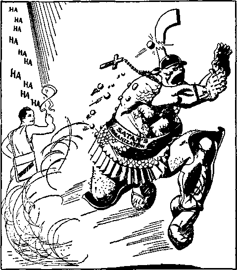

A JOURNAL OF FACT HOPE AND COURAGE
iiiiiiiiiiiiiiiiiiiiiiiiiiiiiiiiiiiiiiiiiiiiiiiiiiiiiiiiiiiiiiiiiiiiiiiiiiiiiiii
in this issue
JEHOVAH’S WITNESSES— AMBASSADORS FOR GOD AND HIS KING
CHRISTIANITY NOT FREE IN AMERICA
EXPOSED (F)
FROM A GERMAN CONCENTRATION CAMP
JEHOVAH’S KING-AND OURS
miiiiiiiiiiiiiiiiiiiiiiiiiiiiiiimiiiiiuiiiiiimiiiiiiiiiiiiiiiniiiiiiiiii
every other
WEDNESDAY
five cents a copy one dollar a year Canada & Foreign 1.25
Vol. XVIII-No. 462
June 2, 1937
-no- ■ ■ "■ ---—— -------------—.....s>»..
Jehovah’s witnesses—Ambassa
dors for God and His King 547
Witnessing to School Authorities 547
A Six-Ycar-Old’s Stand for God 549
Real Manhood and Womanhood 549
Christianity Is Not Free
Inquisition Through Color of
The Crime of Being One of
Catholic Inquisition’s Rebirth
Meet Charles Brandis, Brazoria 555
Jehovah’s Blessings in
Kingdom Privileges on Shipboard 556
Beyrouth—Tripoli—R^hba Akkar 557 Seeking the Great Shep fiord's
Kingdom Opportunities in
Hungry People and
Out of the Hierarchy
50,000 Pieces of Arabic Literature 560
Huge Phonograph Work in Sight 560
Jehovah’s witnesses in
Seventh-day Adventists Take
Falsehoods Sent Out from Berlin 564 Germany Even Worse than
From a German Concentration
“Shot While Trying to Escape” 569
Cox Wants Roosevelt Made Dictator 570
.-cj-rQ.--------------—------------------------------------------------------------
Published every other Wednesday by
GOLDEN AGE PUBLISHING COMPANY, INC.
117 Adams Street, Brooklyn, N. Y., U. S. A.
Clayton J. Woodworth President Nathan H. Knorr Vice President
Charles E. Wagner Secretary and Treasurer
FIVE CENTS A COBY
?1 a year, United States ; $1.25 to Canada and all other countries.
. Notice to Subscribers
Remittances : For your own safety, remit by postal or express money order. When coin or currency is lost in the ordinary mails, there is no redress. Remittances from countries other than those named below may be made to the Brooklyn office, but only by international postal, money order.
Receipt of a new or renewal subscription will be acknowledged only when requested. Notice of expiration is sent with the journal one month before subscription expires. Please renew promptly to avoid loss of copies.
Seno change of address direct to us rather than to the post office. Your request should reach us at least two weeks before the date of issue with which it is to take effect. Send your old as well as the new address. Copies will not be forwarded by the post office to your new address unless extra postage is provided by you.
Published also in Bohemian, Danish, Dutch, Finnish, French, German, Greek, Japanese, Norwegian, Polish, Spanish, Swedish.
Offices for Other Countries
British 34 Craven Terrace, London, W. 2, England
Canadian 40 Irwin Avenue. Toronto 5. Ontario, Canada
Australasian 7 Beresford Road, Strathfield, N. S. W„ Australia
South African Boston House, Cape Town, South Africa
Entered as second-class matter at Brooklyn, N. Y., under the Act of March 3, 1879.
•■sxG)'------------------------------------------------------------—----
Volume XVIII Brooklyn, N.Y., Wednesday, June 2, 1937 Number 462
Jehovah’s witnesses—Ambassadors for God and His King— Process Servers of the Great Judge—Announcing that Jehovah’s Kingdom Is Here
(Part 2)
(A brief account of some experiences of true Christians in various parts of the United States, Canada, Germany, Italy, Rumania, South Africa, Syria, Palestine, Egypt and other lands in [and as a consequence of] their fearless and thrilling denunciations of the clergy of the Devil, the politicians of the Devil, and the financiers of the Devil, beginning with the great Keystone State of Pennsylvania, U.S.A.)
Witnessing to School Authorities
By August Buss, Jr.
this to the principal. This he did. From that time
IAM a student at Belleville High School, Belleville, N. J., Where, on March 25, 1937, I was suspended from school because I refused to salute the flag.
I reached the age of sixteen on July 10, 1936, and am completing my fourth and last year of school. I am an active worker in the Newark company of Jehovah’s witnesses and I was immersed at the Newark convention in October, 1936. Since then the issue has been pending until the present date.
In October, 1936, I was asked to lead in the morning exercises
on there has been nothing said by the author-
“When the Son of man eometh, shall he find faith on the earth!’’—Luke 18: 8.
ities in the school, but a few students have had considerable discussion on the issue.
On March 24, 1937, I was called down to the principal’s office in the afternoon. He told me that he had the understanding that I had refused to salute the flag last fall, but since then I had saluted the flag. I corrected him on this point, stating that since last fall I have not saluted the flag, and explained to him why I did not. I told him that I had consecrated myself to do the will of Jehovah. If I pledged allegiance to the flag, I would be bowing down to man
in my schoolroom. I explained to the teacher that I would gladly lead the Lord’s prayer and read the Bible, but I refused to salute the flag or lead in this part of the exercises, and explained why I wouldn’t. The teacher told me (in a very pleasant manner) that he would have to report made emblems and going contrary to God’s law, which is supreme. I stated also that I, by saluting the flag, would be pledging my life to this country, and this I could not do, because I had completely consecrated my life to Jehovah. He asked if I would be willing to say the same to the Board of Education. I replied that I would.
March 25, at about 9 a.m. I was called down to the principal’s office and introduced to the superintendent of schools in Belleville, Mr. Parmer, and a member of the Board of Education, Mr. Daniels. The principal, Mr. Kittle, asked me to repeat what I said the day before to him. This I did. Then the questioning began. I was asked what pledging allegiance to the flag meant to me. I explained saying that by saluting the flag it meant laying down my life, if necessary, for this country, and I could not do this, because I had already consecrated my life to Jehovah. I respected the flag and the country and obeyed the laws of the land until they come into conflict with God’s law, which is supreme. They tried to break down my explanation by saying that saluting the flag was just showing respect to it and the country. Many other questions followed:
How long was I connected with Jehovah’s witnesses?
I told them about two years, but it was not until last fall that I really received a full understanding of God’s Word and had taken my stand accordingly.
If my mother were about to be shot, would I do something to protect her?
Seeing that they were getting around to the point of protecting this country, I replied that I would leave the matter in the Lord’s hands and rely upon Him.
What does the name “Jehovah” mean?
I explained the meaning to them, telling them that it means God’s sure purposes toward His creatures and that it is a Hebrew word used many times in the Bible, especially in the Old Testament.
What attitude would I take if a foreign country invaded this country? I would go on as I do every day, leaving my safety in the Lord’s hands. I was not interested in this country’s or any other country’s affairs, anyway.
Was this all brought up for publicity on my part?
No. Any publicity I received was not intentional. I was not interested in making a public show of myself.
Is Satan a spirit creature ?
He is, and we cannot see him. Satan was created a perfect spirit creature by God in the beginning. He turned against God and has set up an organization, trying to imitate God’s. This organization has three distinctive parts, namely, the political, the commercial, and the religious divisions. Further explanation was stopped by seemingly unnecessary interruptions by the superintendent of schools and the member of the Board.
Was I created by Jehovah?
No. I am an offspring of Adam, born under the Adamic sin. Jehovah creates nothing that is imperfect.
Did I sit back and expect the Lord to hand everything down to me ?
Here, I stated that I didn’t. I told them that the Lord expects us to use a little common sense in obtaining the things we need to keep on living.
What did I intend to do when I was suspended? Did I realize that every employer would turn me down because I was suspended from school for not saluting the flag and showing respect to this country?
I would rely on the Lord when the time came. Even if I didn’t find work, I had a work—the Lord’s work—to do and I would find this very enjoyable. The gentlemen informed me at this point just how much it would cost me to go to another school to complete my education, for tuition, etc., and the principal informed them very nicely that I was sixteen and did not have to go to school any more, thus avoiding any extra cost.
After being informed that I was very stubborn and conceited, did I intend to change my mind in regard to saluting the flag?
I still refused to salute the flag and did not intend to change my mind at any time whatsoever.
Did I realize that if I were in a foreign country ( for instance, Spain) I would be taken out and shot? Did I realize that I would be suspended?
Many people who refused to bow down to foreign governments in Europe were shot. I expect this to happen here in time. In Germany people, incidentally Jehovah’s witnesses, are killed because they refuse to attribute their salvation as coming from Hitler by saying “Heil Hitler”.
These questions above are the main ones asked me in the course of the conversation. A few scriptures were quoted and applied but in the wrong way. I corrected the gentlemen on these and explained what the scriptures really
meant. They didn’t take this so well. There were other very minor details discussed, of such slight importance that it is not worth taking up your time relating them to you.
The two gentlemen from the Board became slightly angry and proceeded to tell me what they thought of me and my opinions. I told them that they were not my opinions, but the Word of Jehovah, the Supreme One, and He could not be wrong. The principal was very nice and stated that he was sorry that this had to happen and, since it was not in his hands, he could do nothing about it. We shook hands, I turned in my books, bade him good-bye, stating that there were no hard feelings, and left.
I give thanks to Jehovah for giving me the privilege of bringing His message to these gentlemen so that they could take their stand for or against it, on God’s side or on the Devil’s side.
I omitted to say that the Mr. Strand in Trenton was called upon by telephone for advice in this matter. He expressed his opinion, after reading the law over the telephone, that we be suspended immediately. All this went on before we were called down to the principal’s office.
Pansy B. Millee, arrested for the “crime” of preaching the gospel in Jersey City, wrote the following, of interest to many:
Believing that you will appreciate the account of a very interesting incident that was brought to my attention last night, I am taking the liberty of relating it, calling to mind Matthew 21:16, that out of the mouth of babes Jehovah’s praise may be perfected. It relates to a dear little girl just six and a half years old, Dorothy Romaine. Her mother and father have both taken their stand on the Lord’s side within the last two years, and, unlike some who have seen and known the goodness of our Father for many years, as soon as the matter of Christmas was brought to their attention they joyfully fell in line, and took a consistent course of action accordingly.
At this season there were the usual Christmas celebrations in the school which Dorothy attended, and among the festivities planned was a trip for the whole class in a school bus to Bamberger’s in Newark, to see Santa Claus and get a present from him for 25c.
Of course, Dorothy thought that would be lots of fun and wanted to go; so her mother explained to her in the following manner:
Dorothy, you may go, if you want to. I will not forbid you to go, but if you do go it will mean you are not on the Lord’s side; so now, dear, you go back to school and think it over and tell mother what you have decided to do when you come home.
Now, as I complete the account, it is with eyes filled with tears, for that precious child came home from school with a sweet, happy smile, and an inward joy that could not be mistaken, to tell mother this:
I want to be on the Lord’s side, Mother, and I am not going to go.
Of course her mother had explained, too, that the Santa Claus was only a man dressed up, to fool the children; and if it were not so, why would he take the 25c from them? When the mother told me about Dorothy’s happy spirit after making her decision, I could not help but think of the wonderful joy of heart and peace of mind which was our portion recently in the Hudson County jail. Could one ask for more? Surely Jehovah is a rewarder of those who diligently seek him.
A TEXAS mother writes of the joy that came to her when she went to see the principal of a school from which her eleven-year-old son was about to be expelled because unwilling to violate the command in Exodus 20:3-5. The principal was not in; so the mother talked with his wife, kindly, and at length. The wife, at first hostile, finally saw the point and promised to take it up with her husband. That same evening the principal drove up to the home of the boy’s mother, came in and apologized, and asked for advice as to what to do. Now the flag at the schoolyard is raised at high mast as usual, and the pupils march out and sing “My country, ’tis of thee”, and that is all. The flag-worship feature is ended.
Doctor Dafoe Not a Roman Catholic
TWO subscribers have written that Dr. Allen
R. Dafoe, Callander, Ont., famous for his association with the Dionne quintuplets, is not a Roman Catholic.
ON March 1 an astounding statement of facts bearing the above title was delivered to the United States Congress. Each member received a copy. It unfolded to the members of that august body the amazing details of the rebirth and operation of the Boman Catholic Inquisition in the United States of America. Many of the facts have heretofore been presented in The Golden Age, and therefore only a portion of the statement is here presented.
Under the operation of this Inquisition during the past year 1,149 Christian people have been placed under arrest. They were arrested, not for violating the law, but because they were conveying to the people the life-giving message of truth from God's Word, the Bible. The wrongful and illegal arrests were accompanied by other cruel and unusual punishments such as:
Assaults and beatings;
Convictions without evidence; Confinement in filthy prison cells;
Denial of right to put in a defense;
Denial of food while incarcerated;
Severe sentences;
Sentences without trial;
Trumped-up charges;
Confiscation of property;
Denial of right of petition;
Assaults by mobs;
Legislation specifically enacted and enforced against Jehovah’s witnesses;
Denial of freedom of worship, conscience and speech;
Confinement in dungeons on bread and water;
Intimidation of counsel by courts.
Inquisition Through Color of Legal Procedure
Centuries ago the Waldenses worshiped God and preached the gospel under adverse conditions. They called from place to place and house to house; talked with the people, and, if the time and place were propitious, cautiously produced from secret hiding-places in their garments copies of the Holy Scriptures for the edification of the householders. Their religious opponents, the Roman Catholic Hierarchy, searched them out and subjected thousands of them to severe persecution.
A similar situation exists today in some parts of the United States. Jehovah’s witnesses call from place to place and from house to house for the sole purpose of bringing to people the comforting message of the gospel of Almighty God. In sections of New Jersey, Pennsylvania, Georgia, and other benighted areas of this land of liberty, it would be necessary for them to work with caution and secretiveness to avoid arrest and imprisonment and severe punishment.
There is some difference, however, between the inquisition of today and that of the time of the Waldenses. In those days the fact, or even suspicion of heresy, was sufficient to sustain incarceration and persecution. The Catholic Church was superior to the state and its laws were obeyed by the secular authorities. Its power was wielded openly and intolerantly. Today religious freedom is part of the fundamental law. All creeds, doctrines and religious organizations in theory stand equal before the law. The state will not openly lend its aid to the suppression of one in favor of the other. Therefore the religious organization that would wield power and suppress the preaching of the truth of God’s Word must of necessity use duplicity and cunning strategy to accomplish its nefarious purposes. A smoke screen must be thrown out. Existing laws and ordinances have to be applied and construed in subtle manner. New legislation must be passed, couched in cunning and artful verbiage presenting an ostensible purpose far different from the actual reason for enactment. For your edification and instruction a few samples of the modern style of using the secular power to stamp out “heresy” are listed.
A Multiple Law Inquisition
Any law that can be distorted, misapplied, misconstrued or enforced against Jehovah’s witnesses is used under the modem union of church and state. Note the kinds and varieties:
(a) Peddling and Canvassing Ordinances.
Practically all municipalities have ordinances designed to regulate the commercial business of hawking or peddling, and soliciting. In the great majority of the cities of this country there would be no thought of applying these commercial ordinances to the preaching of the gospel. But where the ecclesiastical powers can dictate to the secular authorities, these ordinances are used and Jehovah’s witnesses are charged with engaging in the business of peddling or canvassing for the sale of goods, wares and merchandise from door to door.
(b) Circular Distribution Ordinances.
In Jersey City, Secaucus, Orange, and a few other towns of New Jersey, are ordinances under which you could be penalized for handing to your neighbor a copy of the Declaration of Independence, or if you passed out a few New Year cards to your friends at their homes you could be subjected to ninety days in the county penitentiary. Such ordinances are enforced usually at the discretion of the police authorities, and they are conveniently used as a means of suppressing the activities of Jehovah’s witnesses. Secaucus, New Jersey, at the time of adoption of such law, made
announcement through its mayor that the ordinance would not be enforced against businessmen or politicians. It was publicly stated that the ordinance was designed to stop the work of Jehovah’s witnesses.
(c) Trespass Ordinances.
Some towns have ordinances which make it a trespass to ring the doorbell of a citizen unless previously invited to do so. Of course, these ordinances are not used against the bill collector, the meter reader, or the neighborly caller, but are very useful in cracking down on Jehovah’s witnesses.
(d) Disorderly Conduct Laws.
Used when no other is convenient. Going to the door and politely asking a householder to read a card is defined as disorderly conduct by those who do the bidding of the clerics.
(e) Laws Regulating the Soliciting of Contributions.
(f) Sales Tax Licensing Laws.
(g) Ordinances Prohibiting “Begging”.
(h) Vagrancy Laws.
Like disorderly conduct statutes, vagrancy laws are used when no other is convenient. Calling on people from house to house for the purpose of informing and enlightening them on the Word of God has brought charges of vagrancy and prosecutions thereunder.
(i) Gag Laws. Sometimes Called “Anti-Nazi Laws”.
New Jersey has a sample of this. It is a law making it a misdemeanor to publish or have in one’s possession any printed matter or photograph, or even to state anything publicly, that might tend to cause hatred or opposition to any religious group. The owner of any hall can be prosecuted under such law if he permits a licensee to say anything in his hall that might shock the susceptibilities of a religious organization. At the time this measure became a law it was charged that it was aimed at Jehovah’s witnesses. Exact duplicates of the law were introduced in the New York and Massachusetts legislatures a year ago but did not pass.
(j) Flag Salute Laws.
Jehovah’s witnesses conscientiously believe it to be a violation of the law of Almighty God to salute any flag. As a consequence children have been expelled from schools; beaten, choked and tortured; sentenced to public institutions; and their parents prosecuted under truancy laws.
(k) Contributing to the Delinquency of Minors.
Members of Congress will be interested to know that in New Jersey if parents teach their children to love God and serve Him by taking the gospel in printed form to the people they may be charged with contributing to the delinquency of minors. Two cases arc pending under such charge in that Fascistie area.
(1) Loud and Unusual Noises.
Using “Fourth of July ordinances” against sound equipment of Jehovah’s witnesses while sound equipment of commercial concerns operates freely without interference. This happened in Orange, New Jersey.
(m) Fraud. Pretending to Preach the Gospel.
Because Jehovah’s witnesses presented the facts to the people concerning the injustices inflicted upon them some of them were charged with perpetrating a fraud and merely pretending to preach the gospel. They were sentenced to thirty days in jail under such charge in Weehawken, New Jersey.
(n) Traffic Violations.
Great diligence is manifested by police authorities in the darkened areas of the inquisition to fasten some violation of traffic laws upon Jehovah’s witnesses. False charges are filed, and if one of them actually violates some traffic ordinance special attention is given to it. Bail requirements are made steep, and heavy sentences given.
Charges have been filed against Jehovah’s witnesses, and arrests made, under every one of the many kinds of laws and ordinances above mentioned. It is not done for great zeal for law, order and justice. There is a common source for the action, which is the hatred of a great and powerful religious organization against those who publish the truth of God’s Word. It cannot make and enforce its own unrighteous decrees as in the Dark Ages, but does try to suppress “heresy” through the multitudinous laws as herein stated.
The Crime of Being One of Jehovah’s witnesses
When the clerics and the principal of their flocks get the police all heated up for a pontifical investigation, it is not safe for one of Jehovah’s witnesses to be in town. This is literally true. The police department broadcasts the order: “Jehovah’s witnesses are in town. Bring them in.” The squad cars go forth. Policemen on the beat are notified and a wholesale garnering-in of Christian people begins. Regardless of what Jehovah’s witnesses are doing, they are locked up. Then the law department is called in. The magistrate and the corporation counsel get down the law books and busy themselves in the endeavor to find some law to justify the arrests and continue the persecution.
Is this a fanciful story? Do such things really happen in this country? We cite a few specific cases.
Peoria, Illinois. On October 25, 1936, a large number of Jehovah’s witnesses called upon the residents of Peoria county. In order that the sheriff and other law-enforcing officials would have no reason to misunderstand the purpose of their visit, representatives called on them and left with them letters stating why they were calling on the people. At the instigation of one Cnarlcs Harrison, a priest of the Roman Catholic Church of Brimfield, Illinois (near Peoria), the sheriff and police officials arrested and threw into prison 111 of Jehovah’s witnesses. They were arrested on identification, regardless of what they were doing. Literature in their cars was sufficient cause and evidence for arrest. If they were standing on the street corner, or walking on the streets, or sitting in their automobiles, they were arrested and thrown into filthy prison cells. They were jammed in cells like cattle, and were denied all civil rights. They were abused by officers; called names; threatened with violence; taunted and sneered at; denied food; denied the right to telephone counsel; and treated worse than criminals. Other prisoners were incited to treat them roughly. They were held up by the prisoners in the jail and forced to give them money for their convenience. They were not permitted to lock their ears, and their belongings were stolen therefrom. The Peoria Journal of October 26 describes the efforts of the legal department to find some law to support the illegal proceedings as follows:
Police Magistrate Winn was busy thumbing the statutes in an effort to find some clause under which those arrested could legally be arraigned before him.
No law could be found on which to hold them. The city attorney, J. B. Wolfenberger, of Peoria, was then delegated to dismiss the innocent people and warn them not to come to this town again. He told them their presence was undesirable and that they should not return to town. They were thereupon dismissed, after being held in jail twenty-four hours without cause and without charge.
Maywood, New Jersey. On December 8, 1935, twenty-nine of Jehovah’s witnesses were rounded up and thrust into the city dungeon. They were brought up for trial before the Borough recorder and charged with distributing circulars in town without a permit. There was no evidence that any of the defendants had distributed circulars, but there was evidence that all the defendants were Jehovah’s witnesses. We quote from the testimony of Waldo J. Schmidt, police officer of Maywood, in the case of Lena Zandstra:
Question: Why did you arrest her, Officer?
Answer: I asked her if she was one of Jehovah’s witnesses, and she said “Yes”.
Question: The moment she made known to you the fact that she was one of Jehovah’s witnesses, that was your signal, or order, to bring her to headquarters? That’s correct?
Answer: Yes.
And that was the reason why twenty-nine Christian men and women were arrested in Maywood. They were Jehovah’s witnesses and were in town ‘without permission of the police department’.
Many other communities present similar disgraceful and un-Ameriean records. Two young men on October 18, 1936, made the mistake of driving through Jersey City, New Jersey, with some books and booklets in their ear containing Biblical treatises. They spent ten days in the county jail for the “offense”. On February 16, 1936, two of Jehovah’s witnesses drove into the city of Irvington, New Jersey, to deliver a parcel to a specific person. Their car contained an advertisement of a lecture by Judge Rutherford. That was sufficient to identify them as Jehovah’s witnesses. They spent three days in jail waiting for trial, and were fined twenty-five dollars each. Hoboken, New Jersey, Plainfield, New Jersey, Griffin, Georgia, Lagrange, Georgia, have each had their part in this brand of religious persecution. The Constitution, with its Bill of Rights, is not regarded with high favor in such communities.
Lawless Courts and Police
If officials were honestly convinced that some local ordinance prevented preaching the gospel from house to house, and desired to have the matter adjudicated through due and orderly process of law, there could be no objection to that. In a duly constituted court, with a competent and unbiased judge, and with opportunity to present facts and law to the court, Jehovah’s witnesses are willing to contest the matter without complaint. But when courts become lawless, when they disregard orderly procedure, and when they allow passion and prejudice to control their decisions, justice cannot be secured. When, as one New Jersey magistrate vehemently expressed it, they proceed to “stab Jehovah’s witnesses in the back at every opportunity” some other form of redress must be secured.
Kindly give careful consideration to some of the following records of “trials”, so called, in portions of these United States, where constitutional guarantees are a thing of the past.
Hoboken, New Jersey. On October 19,1936, thirty-six of Jehovah’s witnesses were tried before the Recorder’s Court of Hoboken. They were charged with violating an ordinance regulating the business of peddling and other occupations. The thirty-six cases were all tried in one day. All thirty-six defendants were “found guilty”. They received sentences ranging from twenty to sixty days. Under the charge as filed against the defendants it would be necessary to prove: That they called from house to house; that they sold goods, wares or merchandise at such houses; that they did it as a business; and that they did not have any license from the city. Here is a copy of the record of the ease of Mabel Cook, one of the thirty-six defendants:
Mayor and Council of the City of Hoboken
Complainant.
Mabel Cook,
Defendant.
John P. Beronio, sworn.
Direct Examination by Mr. Gottlied, City Attorney: Question: Did you see the defendant Mabel Cook, October 17, 1936?
Answer: I did.
Question: Where at?
Answer: I saw her in the basement of 161 Eighth Street. I called her. She came up. Asked her what she was doing. She said, “Preaching the gospel.’’ I asked if she had a permit for those pamphlets and things. She said “No”. Told her ‘All right; she was under arrest’. Asked her why she didn’t have a permit. She said she didn’t need one.
Question: Did she say anything else?
Answer: She said: “Am I under arrest?” I said “Yes”, and she came along.
Cross Examination by Mr. Moyle, Attorney for Defendant :
Question: Where did you see her?
Answer: 161 Eighth Street.
Question: You saw her at that house?
Answer: Yes.
Question: That is the only place you saw her?
Answer: Yes.
Question: Of course you did not hear the conversation? Answer: No.
Question: Did she talk to anyone in the house? What did she say?
Answer: What she said I don’t know.
Mr. Moyle: That’s all. I move for dismissal. There is no proof here of any violation of the ordinance whatsoever.
The Court: Motion denied. Does the defendant care to take the stand?
Mr. Moyle: The defendant rests.
The Court: I find the defendant guilty of violating the city ordinance. $25.00 or 30 days in the county jail.
There was no proof of sale of goods or merchandise; no proof of any attempt to sell goods; no proof that defendant went from house to house for that purpose. But the Court knew that the defendant was one of Jehovah’s witnesses, and therefore she got thirty days in the county jail.
Among the thirty-six defendants at Hoboken on this occasion were some who declined to talk to the officers unless their counsel were present. For this “offense” an extra charge of disorderly conduct was placed against them, and two such wlio declined to go on the witness stand and give testimony against themselves were given sixty days in jail in place of the customary thirty.
Thus is justice (?) administered in the dark and sombrous depths of that fount of democracy called Hoboken.
New Philadelphia, Pennsylvania. In this town Catholic priests have instructed the people and the law-enforcement officials to run Jehovah’s witnesses out of town at any time they appear. On July 12, 1936, while a group of Jehovah’s witnesses were calling on the people a mob appeared, assaulted the witnesses, damaged their cars, and tore up their literature. The police of the city co-operated with the mob by throwing forty-four of Jehovah’s witnesses into jail. Eight were held and charged with disorderly conduct, in spite of the fact that priests, police officials and local residents were the ones guilty of disorderly conduct. Seven of the eight were ‘found guilty’ of disorderly conduct although there was not any evidence that they had been guilty of anything but peaceably calling on the people.
Jersey City, New Jersey. On Sunday, October 18, 1936, four of Jehovah’s witnesses were sitting in a car in this community of medieval practices. They had literature in their car but had not called on anyone in town. They were arrested and charged with distributing circulars. The police admitted to the court that they had not distributed any circulars. The court held that they probably would have done so if they had opportunity, found them “guilty”, and sentenced them to ten days in jail.
Lagrange, Georgia. 178 were arrested on May 17, 1936. They were charged with peddling contrary to an invalid ordinance. Seventy-two of them were convicted and sentenced to thirty days on the chain gang. The case of T. G. Boggs is a sample of all. In the course of his work of ministry he called at the home of one Rev. Guy T. Pittman, a Methodist preacher. The preacher was informed that Mr. Boggs was preaching the gospel from door to door and had Biblical literature which would be of value for him to have. The preacher called the police, and Boggs was arrested. There was no evidence that he was engaged in peddling, but, nevertheless, he was sentenced toz thirty days on the chain gang.
In his zeal to serve the clergy and priests of the town of Lagrange the chief of police, J. E. Matthews, made the following statement to a group of Jehovah’s witnesses: “If you ever come here with that bunch again, we’ll leave town and turn you over to a mob.” A short time later Jehovah’s witnesses came to town for the purpose of calling upon the people with a petition for redress of grievances. A mob was organized and led by J. T. Thomason, the city attorney, which assaulted and beat up many of them and drove all of them out of town.
West Palm Beach, Florida. Roy Goodrich, one of Jehovah’s witnesses, was arrested, assaulted and beaten by the police. He was beaten so severely that he has been in poor health ever since. No charge was ever filed against him, and he had violated no law. Just happened to be one of Jehovah’s witnesses, and that was sufficient for this form of brutality.
We respectfully submit and can present to you proofs that it is of no avail to appeal to the courts for relief from this intolerable condition of affairs. Judges have stated their hatred and prejudice against Jehovah’s witnesses in words such as the following:
Judge Thomas J. Holleran, of Irvington, New Jersey: “I will stab you [Jehovah’s witnesses] in the back every time I get a chance. ’ ’
Judge Wm. G. DeMeza, of Plainfield, New Jersey t “No consideration will be shown these Jehovah’s witnesses in this court.” This was followed by: “They are a bad bunch”; “a nuisance”; “fanatics”; “snakes in the grass”; “hoodlums”; etc.
Judge Anthony Botti, of Jersey City, New Jersey: “The constitution doesn’t apply here.” “If you want to preach the gospel, preach it somewhere else. This city is 75- to 80-percent Catholic.” “This is just a racket. ’ ’
Judge Frank Romano, of Hoboken, New Jersey: “Why don’t you people stay away from here? You know we don’t want you around.” “We have told Jehovah’s witnesses to keep out of town.” This same judge, when convicting one of Jehovah’s witnesses, called a local political boss to the desk and said, ‘ ‘ This is one of Jehovah’s witnesses. I’m going to fine her $25.00. Will that be all right?” The “big shot” consented, and the fine was entered accordingly.
Hostility, prejudice and lawlessness on the part of the courts have been further shown in acts such as the following: Making unusual and exorbitant bail restrictions especially for Jehovah’s witnesses. Evasion on the part of officials, thus making impossible the arranging of bail. Suppression of trial records. Jailing of defendants because of their refusal to take the stand in behalf of the prosecution. Needless postponement of trials, subjecting defendants to great inconvenience and much unnecessary expense. Refusal to consider evidence or law in behalf of defendants, and in place thereof a blind and senseless penalizing of innocent people.
Timid Governors Just Can’t Do Anything About It
Petitions and statements have been presented to the governors of the states of New Jersey, Pennsylvania and Georgia, protesting over the outrageous and unjust tactics of the pontifical inquisitors in their states. They have been requested to investigate and use their influence to prevent the complete destruction of religious liberty. It takes a brave man, however, to speak out against the ruthless operations of the sacerdotal politicians who wield great power, and no state executive has yet dared lift his voice in protest over the eviction of freedom of worship from this state.
Catholic Inquisition’s Rebirth in This Country
There is one central source of all this religious intolerance, judicial oppression, legislative chicanery, and lawlessness. That source is the Roman Catholic Hierarchy. By Roman Catholic Hierarchy we do not mean the millions of honest Catholic population, and which are designated by the organization the “children of the church”. They are not a part of the Hierarchy. The Hierarchy is the group of high officials which rule and direct the policies of the Catholic Church. That organization is political and religious. It is a foreign power, and has its tentacles out seeking to secure control of all nations, including the United States. The Catholic press has been exceedingly vehement against the work of Jehovah’s witnesses. A few samples which relate to radio lectures and illustrate the general attitude of the organization are presented:
STOP THESE INSULTS NOW
A strong protest should be lodged immediately—this week— by Catholic people with one or several radio stations in their respective vicinities on which the anti-Catholie speech of Judge Rutherford is scheduled to be broadcast Sunday. Wherever possible this protest should be made in person by individuals as well as by delegations representative of Catholic societies.
This is real Catholic action in practice and there is no time to lose.
Where the station owners object to the financial loss incurred by breaking the contract, they should be made to understand that they stand to lose a great deal more by putting this speech on the air.
—Catholic Register of Kansas City, June 22, 1933.
The Catholic Transcript of December 12, 1935, breaks forth as follows:
Catholics in various localities succeeded in pursuading their home stations to suppress this menace to good will. More recently Rutherford’s followers under the name of Jehovah’s witnesses have got into the news for refusing to allow their children to salute the flag. Catholics have always held that this man should not be tolerated.
Defender of the Faith, Catholic paper of Point Pleasant, West Virginia, in its issue of June 15, 1936, unburdens itself of the following:
If they [Jehovah’s witnesses] are witnesses they are false like those used by the Jews the night Jesus was tried. They should not only be persecuted but prosecuted for perjury . . .
The prelates in general have kept themselves out of sight in court proceedings or mob action against Jehovah’s witnesses. However, in a few cases they became careless and disclosed themselves as the instigators of the lawlessness which followed. In New Philadelphia, Pennsylvania, the Catholic priests of the community instigated a riot by telling the chief burgess and the people of the community to run Jehovah’s witnesses out of town. At Brimfield, Illinois, a Catholic priest inspired the sheriff of the county to institute a brutal campaign against Jehovah’s witnesses which resulted in assaults on some and the unlawful arrests of 111. A Catholic priest instigated the arrest of two of Jehovah’s witnesses in Kansas City, but lost his courage and failed to appear when the matter came up for trial in the higher court. In Bayonne, New Jersey, the police arrested one of Jehovah’s witnesses and took him to a Catholic priest to find out what they should do with him.
No member of the Roman Catholic Hierarchy suffers persecution for practicing his religion anywhere in the United States. But that powerful organization, under the direction of a foreign ruler, would gather this entire country into its fold, if possible, and suppress all freedom and rights of the people.
To put the people in fear, that dictators may rule unhindered, is the scheme and ultimate purpose of that monstrous religious organization. A striking example is Germany, where only the Catholic organization is given a free hand. Hitler and the Vatican, as is well known, work hand in hand. Arriving at a just conclusion, based upon the infallible Word of Almighty God as recorded in His prophecies, it is certain that the Roman Catholic Hierarchy organization is now subtly attempting to gain full temporal power among the nations. One of the means to accomplish that subtle purpose is to put to silence every person or organization that tells the truth to the people of and concerning God’s Word and His kingdom. The Roman Catholic organization is today fulfilling prophecy wherein God foretold that that organization would attempt to seize control of the lands called “Christendom”; that God would permit it to go to a certain limit and that then that organization, and all who support or uphold it, will be completely destroyed by the power of Almighty God. This warning is set forth in the prophecies, and God commands those who love Him to give this and other information concerning His kingdom to the people. The kingdom of God under Christ is the only remedy for the ills of humankind. All those who refuse to know and to serve Christ Jesus the King, and all those who oppose His kingdom, will suffer destruction. The people are entitled to hear the facts, that each one may pursue the course that he desires and that the responsibility may rest upon each one individually.
The Catholic organization should be permitted to practice its religion as it pleases, but the question is: Do the representatives of the people of the United States elected and sworn to obey and uphold the Constitution wish to be used to further the interests of a selfish institution, ambitious to rule or ruin; or will the American Congress take the necessary steps to see that the Constitution is upheld and that a free people shall exercise their God-given rights of freedom of worship of Almighty God according to the dictates of conscience and as the fundamental law of the land guarantees? Surely the members of Congress regard their own eternal destiny and their proper standing before Almighty God as superior to the political support of a religious organization which has as its final objective the political rule of the world. Surely the right of American people to worship Almighty God, without being persecuted for so doing, is more important than to permit a foreign power operating from Vatican City, Italy, to carry out its selfish purpose in this land of supposed freedom.
The statement was signed by Judge Rutherford, as president of the Watch Tower Bible & Tract Society, and presented to the Congress in behalf of Jehovah’s witnesses. In its concluding paragraph the offer is made to Congress to produce evidence proving that the worship of Almighty God in accordance with the dictates of conscience is no longer free in all parts of America. Recommendation was made that a complete and thorough investigation should be made, with open hearings thereon, in order that the destructive influences which would destroy all liberty may be brought to light, and necessary legislation be passed to protect the rights of all the people.
MEET Charles Brandis, Brazoria (Tex.) brave man; you might like to write him a nice letter. On March 8, 1937, as ringleader of a mob in that city, he attacked S. A. Keith, pioneer, for the sole reason that Keith loves Jehovah God and is one of His witnesses. No other charge whatever rested against him. Keith is a cripple. Claiming that he is dictator in Brazoria, Brandis tried to force Keith to leave town, abused him, struck him on the nose, knocked off his glasses, and made his nose bloody. There were 30 or 31 men in the mob at one time; unmanly men, cowards all.
In the same mob with Brandis was a Brazoria gentleman who claims the name of Ogburn. He also was ready to fight a cripple, and eager to do so; he can no doubt be reached in care of Mr. Brandis. Another member of the mob was Mr. Britton; address in care of Mr. Brandis.
Mr. Britton bravely hit the crippled man three times, and kicked him on the left hip, aggravating a serious trouble in that member. Keith, a crippled sufferer anyway, was not able to sleep that night on account of the pain in his hip. Britton is a peach of a citizen; a pippin sure enough. If Brazoria wants to keep him, all O.K. He also broke the glass in the door of Keith’s car. Not sure if he is a deacon in some church, but he probably is.
Mr. Johnson, sheriff of the county, lives at Brazoria. He was not in the mob. You might ask Mr. Johnson what he intends to do with Brandis, Ogburn and Britton for striking, lacking and abusing a cripple whose only offense is that he loves the Creator and is trying to serve Him. It would be interesting to know what he says; you might send in here the replies to your letters.
Jehovah’s Blessings in the Near East By Joseph E. Rahal (Ohio) (From a report to Judge Rutherford)
I WANT to take this opportunity of giving you a general report of my trip to Syria, as well as to tell you of the conditions which I found there.
I sailed from New York on the S.S. Normandy September 2, carrying with me nine cartons of Arabic publications and two cartons of Angels booklets. After I had boarded the steamer witness Abood advised me that the Angels booklets were banned in Syria course, it was too late to take them off, and I said the Lord’s will be done and if it was necessary I could leave them in France.
While on the steamer I used all my time in the witness work and by Jehovah’s grace I was able to place several hundred of these booklets as well as bound volumes. I reached a class of people that could not be reached in any other way, first calling on the tourist and first class and then on the third class.
and Mt. Lebanon. Of
Laughing at the Devil’s organization
Reaching France, by redeeming the time I became acquainted with a lot of Syrians from all over the world and by Jehovah’s grace I was able to place about sixty-some odd bound books and 128 booklets. After a few days in France I decided to take all the publications along with me. I sailed from Marseilles on the S.S. Providence and I discovered that seventy percent of the passengers were either Syrians or Egyptians and, thanks be to the Most High God, I used the entire voyage of seven days in carrying this message to every quarter of the ship. In the first-class bracket there were ambassadors, consuls, and men who represent and hold high offices in various governments. Of course, on the ship they couldn’t say that they did not have time, and there wasn’t anywhere else for them to go.
Kingdom Privileges on Shipboard
Besides giving a good testimony and placing 300 pieces of literature I persuaded the purser of the Messageries Maritimes that since the bulk of his business depended solely on Arabicspeaking people it would be to his advantage to secure a good quantity of books and booklets and use them in his libraries, namely, for the first, second and third class. After much effort
I succeeded in placing almost a half carton of
books and booldets, and he distributed same to the three different classes.
On this same steamer there must have been about a hundred nuns and an equal number of Jesuit priests. By the grace of Jehovah I was able to give these men and women a witness in the light of which they never would be able to-say that they knew nothing about the impending trouble, and I was successful in placing some literature with some of them, but it was strange to see some of the nuns and
priests steal their way into the libraries and
to the tables and pick some of the literature, read it, and return it almost in a subtle manner.
Finally we reached Alexandria, and I was thankful that I had the opportunity to spend two days in the land of Pharaoh. I still had several hundred Angels booklets; so I worked in the government buildings, from the post office to the customs houses, and just as I was ready to go to the city proper I was held by several policemen, who reminded me that that was a Mohammedan country. Of course I inquired if all the population was Mohammedan, and their answer was no; and then I said that ‘the earth is the Lord’s, and the fullness thereof’; and when the man heard me he said, “I can do nothing else than let you go through.” I worked that entire
clay and was able to place a large number of Angels booklets, as I was determined to put them to use.
Beyrouth—Tripoli—Rahba Akkar
I finally sailed for Beyrouth; and after we went ashore the customs authorities examined all my baggage, and when he came to the Angels booklets he wanted to know what they were. I gave him an exact testimony relating the contents of the booklets. He was so carried away by the wonderful news he said, “That’s all; take them away!” After spending a week or so in Beyrouth with the friends I endeavored, by the grace of Jehovah, to organize them into a service unit after meeting with them for five consecutive nights and lead them into the field service during the day. Finally the weak sisters did not attend the meetings any more.
Then I made numerous trips to Tripoli, and I found the company there in excellent condition. I organized them for service and spent several weeks with them, leading them every day in the field service, and finally was successful in encouraging two brothers to sign up for pioneer work. The company there today is in the care of witness Attia, w'ho is a very capable brother meek and teachable and speaks excellent English and has a clear knowledge of the truth and can see the issue. He is employed by the I.P.C., viz., the Irac Petroleum Corporation. In his spare hours he translates the Watchtower articles into Arabic and writes them by hand and distributes them among the friends.
There was a young witness there in his twenties who joined me in my trip to Syria and Palestine. He was, and is, very zealous and, like witness Attia, is blind to everything but Jehovah’s service. He, together with witness Attia, assisted me in organizing a company in Amion Kora, a distance of 38 kilometers from Tripoli, and now they are rejoicing in going out in the service and making a general report monthly.
I also organized a company in Rahba Akkar, Liban. The first week in October I took a little company with me, namely, witness Attia, his two sons and two others, for a week’s trip into the rural section, south of Homes, Syria. We worked in towns and villages. After working one town we came across one man who, after hearing the message, was so overtaken that tears started to run down his cheeks and he asked us to break bread with him, and was very persistent in so doing. We complied with his wishes and, of course, when we got to the house there were no chairs and we had to sit on the floor, crossing oui’ legs, and you can imagine what happened to my trousers!
While there the man of the house invited us to spend the evening with the mayor of the town. Of course, the ancient custom is that all the heads of the families gather into the mayor’s mansion, where he treats them to coffee, and, by Jehovah’s grace, we redeemed the time by giving testimony to over 100 men. Some were crying, some sighing, and some were shouting.
While we were in this place the three priests of the town sent word to the mayor demanding of him to leave the house and come to see them, and on three different occasions he rebuked the messenger, and finally told him to tell the priests that he had company in the house and if they wished to see him they should come there and hear something that would put sense into their heads. Of course, they did not come; and we were able to leave over 50 pieces of literature in the house, with 12 different people. So you can readily see that nothing under the sun can stop this most important message.
Seeking the Great Shepherd’s “Other Sheepf’
We worked one entire week in dusty towns and alley roads and placed hundreds of pieces of literature, taking in exchange oats and some other articles if they had no money to offer. Really the people there are in distress and are poverty-stricken, but they do need Jehovah’s kingdom, and, above all, they do need this lifegiving message which will gladden their hearts and lighten their burdens. In one other town witness Attia happened to know the minister, and we were invited to his home, where he extended hospitality to us and was very gracious and accepted the literature and offered to let us use his church.
Finally we went into another town and had the opportunity of sleeping and partaking of their hospitality. He and his entire family rejoiced and took every piece of literature that we had in Arabic, and asked for more, and said, ‘Truly there is famine in the land,’ and clearly stated that in recent meetings of ministers in that part of the country over eighty percent of the clergy expressed disbelief in the Bible; and that grieved the man, so that the message we had and what we had to say gladdened his heart and he could clearly see that this is the truth. He invited us to stay longer, and said that he would assist us in calling on the people and placing the literature.
On another occasion, in the mountains, where we had to scale mountains by foot, in one town a deaf man came. He could read and write but could not hear, and the first day he kept on firing questions at me, and by Jehovah’s grace I answered them to his satisfaction. The next day he was not content to come alone, but brought another deaf person with him. Of course, I had to talk to him through a tube to get him to understand me. I clearly told the old man that if he wanted to live now was his opportunity to take a stand unequivocally on the side of Jehovah. Now I understand that he has joined and is leading the band in the mightiest work that the Lord ever caused to be done on this earth.
Kingdom Opportunities in Northern Syria
Then I made a trip to northern Syria, namely, Aleppo, and this city has a population of about 150,000 Armenians, 150,000 Syrians (“Christians”) and about 300,000 Mohammedans. There is one pioneer there, an Armenian, an elderly man. He does not seem to have the proper precepts and does not clearly see the issue. I tried my best for two weeks to get them organized, but failed in my efforts, as none of them are wholly devoted to Jehovah. They have been given the literature free or for next to nothing, but they have never worked the city systematically from .house to house, and they raised the alibi that it could not be done.
Finally witness Salim, of Tripoli, and I worked with them for practically two weeks and showed them that it was possible to place literature and to receive the proper amount of contribution, regardless of their opinion, and even though the people were poverty-stricken. It is true that the economic conditions in that part of the country are really pitiful. They refused to meet with me so that I could assist them in being organized. During our stay of two weeks in that city witness Salim and I were able to place over 150 pieces of literature and receive contribution on same.
I then returned to Mt. Lebanon, where I was constantly in touch with the organized service units and joined them every day in the service.
At Beyrouth we have a new pioneer, namely, a Syrian brother, and two Greek pioneers. The Greek brothers are handicapped by reason of their inability to speak the English language, but they are doing their very best.
While in Aleppo I came across six Mohammedans who were lawyers and four judges who had read some of the literature and who really can be called Jonadabs, and they are about to take their stand on the side of Jehovah and His anointed King.
While in Mt. Lebanon one day we worked three little villages of about 200 homes each and came across several Catholic priests. That country is really eighty percent Catholic. Some of them took the literature gladly and made contribution, while others opposed the message.
Hungry People and Hypocritical Priests
We had one more village to work, and the only way that we could get to it was to walk a distance of five miles, scaling the mountains when we reached there. On this occasion there were eight persons in our party, and everyone took his position and we worked the town systematically. One man was so hungry for the message that he said to me that all the money he possessed in the world was seven cents and that he would be willing to contribute that for three booklets. He talked to me with tears in his eyes as he rejoiced in this wonderful message, and I was glad to be able to leave the three booklets with him on this small contribution.
I had only six more houses to do, and in one of these houses happened to be a priest. Upon inquiring at the door his daughter replied that he was not at home, and when this priest saw me he ducked. I searched the three homes for him in the hope that he would not commit some mischief, and I finally caught up with him with thirty-five people in the house. I gave him the testimony as well as these people, and at the same time I kept an eye on him, and when he refused to take any of the literature he openly said that he did not believe in the Bible, did not believe in its teachings, and opposed this message with every ounce of his being, and further said that he did not want to see Jehovah’s kingdom set up. Even with this opposition I was able to leave some literature in his house, and finally told him that his blood was upon his own head, and walked away.
After finishing this town we walked seven miles to get back to where we had started; and while it rained, that did not hinder us. While walking on the highway I met a young man walking from town and stopped him and gave him the testimony. He said that he had no money, and that all he possessed was a donkey, but that he would be willing to trade. Of course, I had no use for the beast, and finally traded him six booklets for a needle-worked handerchief that his sweetheart had given to him, and he was glad to part with it in exchange for the life-giving message.
We went back to town and thirty-five of the brethren who had attended that special campaign placed more literature than ever before, and were themselves really amazed at the reception which they received at the hands of the people who are absolutely disgusted with the formalism in church organizations.
Out of the Hierarchy into the Light
I then made an extensive trip to Palestine and helped to organize the friends there, and while I was there the Tripoli company received a letter from a former professor in a Jesuit college in Jerusalem who had read some of the publications and was really hungry for some more.
After reaching Haifa, Palestine, witness Salim and I located some friends who were having some meetings but knew nothing about the service. The first night we had a meeting of about 35. The next morning we led them out in the service and more than half of the above number participated in the actual house-to-house witnessing and were able to place some literature and found the people really hungry and waiting for the message. Then we organized a little band and hired a special automobile and traveled a distance of 94 miles in answer to the request that this professor had made. We reached his home and spent some little time with him in giving him the testimony, and before we knew it there was a houseful. We were able to place in his household practically 30 pieces of literature. He is really hungering and thirsting after righteousness—happily he may find the Lord. He clearly stated that he is disgusted with that devilish and most satanic organization, namely, the Catholic Hierarchy, and that now he is rejoicing in the finding of that for which he has been searching for thirty years or more.
All at once he sent a messenger after the priest, and straightway the priest wanted to shake hands with me by calling me a brother. Of course I objected, and he said in the presence of all these people, “I am really your brother in Christ.” Then I said, “If you really love Jehovah and His Christ, take off that maternity gown you are wearing.” He immediately cast his robe to the ground and said, “I am for Jehovah and His King.”
Then he related his story, that he had been a priest for thirty-five years; that he had been searching for the truth and was never satisfied with the trash that Babylon had to offer. He made a contribution for the literature and joined us in the service. He told me that he had been called before the archbishop and was excommunicated; that they had given him a chance to reform and that every time he was called before a church trial he had not hesitated in ribbing and exposing that devilish and hideous organization, and finally they could not tolerate him any more. He has been using The Harp and other publications to teach the people in his church about the truth, and now he is engaged in the carpentry trade. He told me that he first received the book Deliverance some time ago from a brother who is working as a mechanic in a garage and he has been studying same. He was so enthused with it that he passed this information to the professor and finally that was instrumental in freeing these two men from bondage.
Haifa—Jerusalem—Ramallah
Then we worked this town and placed every piece of literature we took along with us, namely, over 100 pieces. We came back to Haifa and worked part of the town, until we ran out of literature, and were able to encourage one witness who was formerly in Cuba and who speaks excellent English, Spanish and Arabic to sign up for the pioneer work. Finally, at the request of the service department of Brooklyn, I went to Jerusalem and found the conditions there anything but healthy.
There is one German pioneer, but he is more or less sick and is unable to do much work. There is a German witness, married to a Jew, and she is lukewarm. The Society had quite a lot of publications at her home and, of course, they were more or less soiled. At the request of the service department I shipped them to Haifa so the friends there could have some material to work with.
While in Jerusalem I contacted an Armenian priest who had obtained some literature from the German pioneer and read same and enjoyed them. I had the opportunity to tell him that the responsibility was now on his shoulders and that he should take his stand either for Jehovah or for Satan, and that if he remained where he was, namely, a secretary to the archbishop, that would be his death. He answered, “Judge not; I am with you even though I am wearing this black robe.” He cried aloud and cast his robe to the ground declaring himself for Jehovah and His cause.
Now there are many of these people in prison and someone who loves Jehovah must bear this message of the truth to them. Then we organized another company at Ramallah, Palestine. After spending six months in Mt. Lebanon and Syria I found that there is a great deal of work to be done, as the Lord has a people there. By Jehovah’s grace I was successful in organizing the following companies for actual service:
Beyrouth Amion Kora Haifa
Tripoli Rahba Akkar Ramallah
The day I left, witness Attia had gone to a town where over thirty men had left the church and had decidedly taken their stand for Jehovah, so he was to spend a few days in organizing them. So you can see how the work is going—like a chariot of fire!
50,000 Pieces of Arabic Literature
By the time I left there were hardly any more publications left to keep the friends going and there were orders at the Bible House for over 50,000 pieces or more of Arabic literature. There was also an order for ten phonographs and one sound equipment. There is a total order of almost 20,000 Riches alone. Now I understand that the book Riches has been translated and that it is ready to go to press and that the book Preparation is also ready, the translation of which I paid for last summer. I believe that as soon as these books are ready to go to press no less than 50,000 to 100,000 copies of each should be printed in Arabic and that would be a very small number.
I would also like to suggest that the 4|-minute lectures be ready for use in the Arabic language, as they can be used as an instrument far more effective than any other method. They can be used for Egypt, Irak, Syria, Mt. Lebanon, Palestine, as well as Persia and Algeria; for they use the Arabic tongue. I think the most effective way to handle the work from that part of the country is to have a depot at Tripoli, to have witness Attia in charge, who is very capable and honest and devoted to Jehovah, and also have The Watchtower in Arabic, as the food contained therein is very needful to strengthen the friends. I know that from Syria, Palestine, Mt. Lebanon and Egypt more than 350 subscriptions for The Watchtower can come forth as soon as you approve of same.
Really, these friends need that food to give them courage and stamina to go forth in this mighty battle. I am willing to do anything humanly possible that you might suggest that will help this work to grow. I also believe that if one or two brethren over there can devote their entire time to calling on these various companies and lead them into the service, that will be quite an encouragement to them and their work will be more effective. Further, owing to the fact of the economic conditions I suggest that the rate charged on the English books be applied to the Arabic, as the brethren are exceptionally poor and have to sacrifice more time and money on account of transportation.
Huge Phonograph Work in Sight
All the 4^-minute lectures have been translated into Arabic, and can be recorded whenever you say the word. These would be really very effective in the Mohammedan countries. Owing to the mixed population in these various countries the Catholic Hierarchy’s hands are more or less tied even though they virtually rule Mt. Lebanon and Syria.
Witness Shammas, at Tripoli, will be willing and glad to furnish room for the storage of books. By the way, the friends in Egypt are doing their very best and could use some additional new Arabic publications. There are over eight million so-called “Christians” besides fourteen million Mohammedans. I was very much amazed at the interest that these Mohammedans manifested. It is true that one must declare himself before he comes to the house, so the woman of the house can cover her face, but in every instance these Mohammedans have listened to the message, accepted the literature and made contributions for same.
The Egyptian networks would be willing to enter into a contract to broadcast these Arabic lectures almost for nothing. These programs can be heard in Palestine, Irak, Syria and Mt. Lebanon.
A recorded lecture
by Judge Rutherford
THE “sacrifice” (so called) of the mass is a bloodless and therefore ineffective sacrifice.
You pay your money, which is claimed to be an “offering” in behalf of your friends that are in “purgatory”, and, based upon that claim and offering, prayers are offered for the souls in “purgatory”, but which prayers do no good, for the reason that there are no souls in “purgatory” and the mass would do no good because it is a bloodless offering; and concerning this it is written in the Bible: “Because the life of the flesh is in the blood: and I have given it to you, that you may make atonement with it upon the altar for your souls, and the blood may be for an expiation of the soul.” (Leviticus 17:11, Douay) “And without shedding of blood there is no remission.”—Hebrews 9:22, Douay.
The practice of saying prayers for souls supposed to be in “purgatory” is a religious practice handed down from generations past based upon tradition and unsupported by the Word of God. It makes void the Word of God, and is therefore false. Regardless of the time when and by whom it originated, it is false, deceptive and fraudulent, working to the injury of mankind. It results in holding sincere persons in restraint to an earthly organization, and therefore deprives them of their liberty. It improperly and unjustly takes away from the people their hard-earned money, for which they receive nothing, and is therefore injurious to them and their property. Above all, it hides from man the great truth of God’s provision for mankind by which man may obtain everlasting life; and the purgatorial doctrine, therefore, endangers one’s everlasting life.
God’s provision is this: All men, by reason of Adam’s sin, inherited death; Christ Jesus, by the shedding of His lifeblood, provided redemption of man from sin and death; all who believe God’s Word and believe on Christ Jesus and devote themselves to God and Christ, and continue faithful therein, have God’s promise of resurrection to life. There is no other means by which man can get life. (Acts 4:12) The Devil well knows that for man to follow any other course than that pointed out by the Lord means everlasting death to man, and therefore the Devil invents and causes men to practice fraudulent doctrines to keep the truth hidden from men. You must determine, therefore, whether you wish to follow the traditions of men originating with the Devil, and suffer the results, or will believe God and Christ Jesus and find life everlasting in happiness.
Why should the Roman Catholic Hierarchy decline to publicly discuss a question of such great importance as “purgatory” ? If the theory of “purgatory” is true, the Hierarchy should desire to have everyone know about it and to take all possible steps to learn about it. If their theory of “purgatory” is false, then, to be sure, they should want the people to learn the truth, as set forth in the Bible. Christ Jesus is the light of the world and gives light to mankind. He taught only the commandments of Jehovah God. Christ has now come for judgment, and greater light by reason thereof shines upon the Word of God for the benefit of the people. The false doctrine of “purgatory” is uncovered and exposed by the truth, because it is clearly God’s time when all hidden things shall be uncovered. The light reproves this devilish doctrine, and the opportunity is given the people to learn the truth concerning the same. “But all things that are reproved are made manifest by the light: for whatsoever doth make manifest is light.” —Ephesians 5:13.
If you would be led by God’s Word, then know that He says: “Light is sown for the righteous.” (Psalm 97:11) Tor with God is the fountain of life, and in his light shall we see light.’ (Ps. 36:9) If you are sincerely desiring to do right and learn the truth, ask God to help you; and then rely upon His Word, and not upon the theories of men. God’s Word plainly says there are no souls in “purgatory”, but that they are dead, entirely unconscious, and in due time will be awakened out of death and given an opportunity to live. Only those who learn and who obey God’s truth shall get life. God now uncovers the false doctrine of “purgatory” and shows you the way to life. Can you afford to permit the theories of men to cause you to lose life? The Bible is the safe guide.
{To be continued)
SOI
[The foregoing is one of a series of recorded talks by Judge Rutherford on important issues of this day. The phonograph records may be run on the ordinary type of machine and are being widely used for passing important information on to relatives, friends, and neighbors near and far. The Watch Tower Bible & Tract Society, 117 Adams St., Brooklyn, N.Y., are the distributors of these unusual records, and inquiries may be addressed to them direct or in care of The Golden Age.}
WHEN Jesus said: “Swear not at all, . . . let your communication be, Yea, yea; Nay, nay: for whatsoever is more than these, cometh of evil [or, of the evil one]” (Matthew 5: 34-37), He could not have meant that a consecrated person may not swear by the name of Jehovah his Father in a court or on some similar occasion; otherwise Jesus would here be condemning the oaths of holy men of old, such as Moses, Joshua, Boaz, David, and the apostle Paul, and would be saying that their oaths “cometh of evil” or “of the evil one”, the Devil, and that Jehovah’s own law, at Leviticus 6: 3, 5; 19:12; Deuteronomy 6:13; 10: 20, which provided for and recognized swearing and oaths on the proper occasions, was wrong.
The scriptures are numerous in the record of swearing and oaths by approved men of God. Examine, please: Joshua 2:12-14,17, 20; 6:22; 9:15,18-20 (which swearing in behalf of the Gibeonites was confirmed and upheld by Jehovah God—2 Samuel 21:1-6); Ruth 1:17; 3:13; 1 Samuel 20:42; 24: 21; 1 Kings 1:13,17, 29, 30, 51; 2: 8; 2 Kings 25: 24; Ezra 10: 5; Genesis 24: 2, 3, 37; Joshua 14: 9; Ecclesiastes 9: 2. There are also cases where the swearing was by God’s covenant people with heathen, uncircumcised, unconsecrated, opposers of Jehovah, and which swearing of oaths Jehovah God recognized and upheld, even speaking of such as “mine oath” and “my covenant”. On this, please, see: Genesis 21: 22-24, 31; Genesis 25: 33; Joshua 9 re the Gibeonites; 1 Samuel 30:13-15; and 2 Chronicles 36:13 together with Ezekiel 17:13,16-19.
Prophetic scriptures concerning God’s coming kingdom and its conditions distinctly state that creatures devoted to God shall swear by His name; to wit, at Psalm 63:11; Isaiah 45:23; 19:18-22; 65:16.
At 1 Thessalonians 5:27 the apostle Paul says: “I charge” [Greek: orkidzo}, or, as the American Revised Version correctly renders it: “I adjure you by the Lord that this epistle be read unto all the brethren.” The apostle here uses the root verb of the word used by the high priest to Jesus: “I adjure thee [Greek: ex-orkidzo] by the living God, that thou tell us whether thou be the Christ, the Son of God.” If this adjuring or putting Jesus as on or under oath meant nothing to Jesus, why did He answer here, whereas up to this point Jesus “held his peace”, thereby stirring up the priest to adjure Jesus? (Matthew 26:63) Even Joshua adjured Israel.—Joshua 6: 26.
Daniel 12: 7 and Revelation 10: 5,6 record God’s holy angels as swearing by Him.
The apostle Paul declares that men “swear by the greater” and that “an oath is for them a confirmation”. (Hebrews 6:16) But the very words of Jesus show that in His day the Jews were abusing such practice and degrading or treating lightly the proper use of the oath, and instead of swearing by Jehovah they, in their smug sanctimoniousness, were swearing instead, not “by the Greater” (Jehovah) and on solemn occasions, but by heaven, by their head, by the material temple, by the gold of the temple, by the altar, by the gift, and by members of one’s body, as secular history shows. See Matthew 5:34,36; 23:16,18,20,21,22. Also at James 5:12 the apostle likewise specifically mentions the swearing by heaven and by earth and by other oaths. Hence the context of Jesus’ and James’ instruction on swearing would indicate that it was to rule against and bar such lightness of oath-taking or giving, which certainly would never serve as “an oath for confirmation”, but would destroy all confidence in the veracity and reliability of the swearer. This and other scriptures, such as Leviticus 6: 3, 5; 19:12, would indicate the exemption of judicial oaths, and oaths in Jehovah’s name by one of His people, and especially where a witness to His name would be given by the telling of the truth and nothing but the truth.
L^ugene F. O’Connor, police justice, and some of the police of Garden City, N. Y., have been much disturbed in mind because Jehovah’s witnesses preach the gospel from place to place. They claimed that Jehovah’s witnesses violate their law, and thereupon proceeded to violate a number of laws to show how the law should be upheld.
Anna Hanke, seen going from door to door, was charged with disorderly conduct. That was a violation of law. A summons was issued by the arresting officer. Another violation. A new charge was added after trial was commenced, which constituted another breach. A decision contrary to law and evidence was entered against the defendant, which, of course, was not in conformity with law.
The County Court of Nassau County corrected all these in a decision setting aside the unlawful decision of the said police justice, Eugene F. O'Connor.
The following is the story of a pioneer’s experience in Alberta, Canada. Guess the “religion” and the “church” of the “hero”, Tom Quinn. It is the only one that could produce such a D.B. and be proud of it.
I haven’t time to explain fully, but when I was in the Rio Grande district I called at a bachelor’s place, Carl Connelly’s. There were four others there. One bald fellow (Tom Quinn) said he would take the Government book, and went outside. They tried to get me to drink tea with whisky in it, and then straight whisky, but I refused both. Tom Quinn came back and paid for the one book, and the others said if I’d drink the whisky they would all take books.
I refused and went out. I noticed my lines and hame straps were cut. They came out, and I asked them what was the idea in cutting my harness; and they denied it, but said some Catholics had done it but they’d help me fix it up. I said, “Why blame someone else when you’ve done it yourself?” Tom Quinn and Joe Barrett picked up the box off the dog sleigh, and I noticed the runners were torn loose. They were going to throw it over the fence, but I told them to put it down, and held on. They put it down and then Quinn picked up the runners and swung them and hit the horse. I grabbed the lines and stopped it from running a Way.
Then, when I had stopped the horse, I went to Quinn and grabbed the runners out of his hand. He hit me a few times before Joe Barrett pulled him off. He bruised my hand and mouth; back of my head and side of left eye was black. They had seen a rig coming or this Catholic Irishman would’ve half murdered me. Dick Williams drove up. I told him these drunks were smashing my rig and had beat me up, and asked if he would help me get out; and he stopped. So I put my stuff on his rig and they called him aside.
I said, “Don’t go. They want to tell you not to give me any information” (as I had asked who the baldheaded fellow was). He came back and said that was what they had told him. I asked where the fellow lived, and he told me, and said he was always in trouble; and I found out from neighbors it was Tom Quinn.
I had no witness to the damage, and I figured I’d have to drop the matter, though I hoped this Tom Quinn would get punished, as he is a bully and usually knocks people down and kicks them in the face with his boots or bites them. (He bit a fellow’s finger half off, and one guy’s ear lobe right off.) He’s under $100 bond to keep the peace. I heard he had bragged to someone, and George Haben heard him say he smashed my rig; and so I had evidence and reported him to the R.C.M.P., and one of the R.C.M.P. (Constable Dyck) came out.
Quinn lied out of it and said Connelly had hit me. I hadn’t seen Quinn to identify him or I would have made a complaint, but five of them sticking to Quinn’s story would have made it hard to prove my case; and because of lack of time, I offered to drop it, but Dyck said he would investigate and I could see him if I wanted to go ahead with it.
I called on Joe Barrett and he apologized and wanted to settle damages; so they gave me $15, and were glad to do so. I said I had sufficient evidence to go ahead but was willing to drop the matter, now that they made settlement. Quinn would have lost his $100 bond and perhaps have gotten about six months besides.
Seventh-day Adventists Take Their Stand
SEVENTH-DAY Adventists wish it known that they take their stand firmly on the Devil’s side, and not with those who take their stand to worship Jehovah God, and Him alone. This seems to be the gist of an address by the Reverend W. M. Adams, at Riverside, California, January 21. The same dispatch that condemned the parents of those children who for conscientious reasons decline to worship any flag announced that the Adventists were forming an army cadet corps. That is quite fitting. Let them take their stand and all go down with the Devil at Armageddon, as is their present purpose and intent. The Seventh-day Adventists long ago rejected the God of the Bible. Mrs. White suits them better.
< ( A LIE goes around the world while the truth getting its boots on,” and so many lies are published nowadays that it is impossible to answer them all. However, a particularly vicious one was sent out from Berlin, January 10, 1937, and found place in the Paris edition of the New York Herald Tribune, as follows:
World Bible Society Menaces State, Has Communist Tinge, Declare Nazis
(From the Herald Tribune Bureau)
Berlin, Jan. 10.—The illegal German section of the International Bible Students’ Association—an organization which also has American and British sections—has developed in recent years and especially in 1936 into “a serious menace” to the Nazi state, Wilhelm Crohne, ministerial director of the Ministry of Justice, said in a review of criminal justice in the Reich in 1936. The article is published in Deutsche Justiz, organ of the Ministry of Justice.
Members of the association, whose American section is led by Judge Rutherford, believe in the verbal inspiration of the Bible and seek to apply the prophecies of such books as Daniel and Revelation to current history. On the basis of this Scriptural material, members of the German section, which was banned early in the Nazi period, have predicted the collapse of the Hitler regime.
The body has now become a refuge, Dr. Crohne asserts, for “various elements hostile to the state and if not checked will soon develop into a branch of the Communist institution”. Recent information secured concerning the activities of the association in the Reich has been turned over to public prosecutors, he said, with instructions to employ every means under the emergency decrees of February 28, 1933, to bring offending members to justice.
An interesting point is that members of this illegal association are cited by Dr. Crohne as one of four groups which especially occupied the attention of the political police during 1936.
M. C. Harbeck, known to many readers of The Golden Age, thought this was “a little too much of a good thing”, and so wrote the Herald Tribune Paris office as follows:
As a constant reader of the New York Herald Tribune and as European representative of the International Bible Students Association, allow me to call your attention to an article published in the Herald in the issue of Monday, January 11, on “World Bible Society Menaces State, Has Communist Tinge, Declare Nazis”.
This article puts the Bible Students in a wrong light, because the readers are thereby misled to think that Bible Students have something to do with Communism, which is not true. While the matter is treated as a news item emanating from Germany, I would ask you kindly to rectify your article as follows:
The writer of these lines was often in Germany and negotiated with the German authorities regarding the Society referred to, and he is therefore well informed concerning the Society and its activity in Germany. The statement of Dr. Crohne that the Society “has become a refuge for various elements hostile to the state and that if not checked will soon develop into a branch of the Communist institution” is a false statement and should be rectified. The truth is that the Bible Students are persecuted in Germany on account of their loyalty to God and because they have continued to proclaim the good news of God’s kingdom.
Dr. Crohne himself and other competent representatives of the German government have admitted to the American representative of the Society, in October, 1935, in the presence of the American consul, at Berlin, that Bible Students have nothing to do with Communism. The Bible Society at that time withdrew their suit of damage against the German Government and thereupon the confiscation of the property of the Society in Germany was also withdrawn. Activity hostile to the State or communistic activity on the part of the Bible Students was never proved either in the German courts or elsewhere.
The following may serve as an example of how the truth in this case is perverted:
The writer was in Berlin, and having proved that he is not a Jew, he had several interviews with the authorities in the German Ministry of the Interior. Ministerialrat Dr. Fischer stated to him personally, in the presence of an American consul, that the measure forbidding the Bible Students in Germany might be withdrawn as soon as the Bible Society would put aside the Bible, particularly the Old Testament, and would try to build up German Christianity. Amongst other things, Dr. Fischer said, “The whole world must be recovered by German influence and culture”; and that the Germans had God in themselves and as they had awakened Germany, they would also awaken and renew other nations, such as the Swiss, the Hollandish and the American nation. However, since Bible Students stand or fall with the Bible, it was impossible to co-operate with Hitler.
In July, 1935, the writer was again in Berlin and he was to be received by Secretary of State Dr. Grauert, when he was arrested suddenly and without cause, on July 18, by two young Gestapo agents who gave their word of honor that they would not arrest him. Before the writer was taken to the famous Gestapo basement on Prinz-Albrecht Street, he was able, when not guarded, from the building of the Gestapo to telephone to the American consul general. The arrest and imprisonment was reported in the English and the American press, but it was not stated that the case concerned a Bible Student or one of
Jehovah’s witnesses. The American Government intervened and the Secretary of State, Mr. Cordell Hull, demanded that a crime should be proved or the writer should be released within three days. Neither hostility to the State nor communism nor any other crime could be proved in this case, and therefore the writer of this report was released after four days arrest in the Gestapo basement and four days in the police prison on Alexander Square. However, in order to give some excuse for the unjustified procedure, he was then expelled from Germany on account of his “mental attitude hostile to the State”.
The experiences of this man prove that in Germany hardly any Catholics are persecuted, but chiefly Bible Students, of whom there are at present more than 3,000 innocently in German prisons and concentration camps. It is true that Bible Students or Jehovah’s witnesses in Germany continue to exercise their faith in spite of Hitler’s measure forbidding them, and they continue to proclaim the gospel of God’s kingdom, which is not of this world, and that is the only “crime” of the Bible Students.
According to the communication of the Minister of Justice, upon which your article is based, there are to be no further public trials regarding Bible Students, and the measures to defend the State against the Bible Students, which consist of unchristian terror and brutal persecutions, are to be kept even more secret and more confidential in the future. The writer has absolute proofs in his possession that Bible Students or Jehovah’s witnesses in Germany are arrested and terrorized as soon as it is known that someone is a Bible Student or a witness of Jehovah. New secret orders were given out that all people known as Bible Students or witnesses of Jehovah must be arrested. Hundreds of Bible Students, who are harmless Christians, were arrested because they attended the last Bible Students’ convention, at Lucerne, which took place in September, 1936, and which was attended by 3,500 delegates from 20 different countries. At that convention a resolution or protest was issued and many thousand copies of this resolution were distributed in Germany.
This explains why, according to the report of Dr. Crohne, “crime cases” in Germany multiplied and increased during the last part of the year. In the ease of the writer no crime could be proved, and the same is true in regard to all the other “criminal cases” of Bible Students. Bible Students are forced to become martyrs because they wish to obey God rather than man; and they are being dealt with, not by regular courts, but by anti-Christian partisan judges and district attorneys, and they are being persecuted in a country which claims leadership in matters of culture and justice. The chapter concerning the Bible Students in the magazine Deutsche Justiz should have been called “Modern Crimes of Justice”, crimes which throw their shadows back upon the times of the Spanish Inquisition and upon the greatest crime of all time, when Jesus Christ, who was the greatest witness of the truth, was numbered amongst evildoers and was nailed to the shameful Roman cross because of a conspiracy between religionists and the power of the State. Jesus Christ was charged wrongfully with the crime of treason and blasphemy. He was executed though innocent, and now history repeats itself.
The same wrongful charge that Bible Students have Communistic tendencies was made in Poland, where a Polish judge, Zygmund Wolski, published a booklet with the title “Anarchistic Tendencies of Bible Students”. This booklet was based upon an article which appeared in the largest Polish newspaper Ilustrowany Kurjer Codzienny. The representative of the Bible Students in Poland, Mr. Wilhelm Seheider, of Lodz, instituted a suit for slander against the responsible editor. The Polish editor was sentenced by the Polish court to pay a fine of zl.200.— and the costs of zl.110.— to Wilhelm Seheider. The motivation of the verdict proved that the editor had slandered the Bible Students and that in a certain meeting of the Bible Students only Christian themes were treated.
The Catholic Church paper Gazeta Koscielna referred to the same matter and stated in its issue No. 21 of the 21st of May, 1933:
“One cannot identify these sectarians with Communism, which also the Bible Students oppose. In citing statements of Bible Students one must not overlook those which state that Communism or anarchy can never bring happiness to mankind, but for the security of peace and happiness a government established upon a theocratic basis is necessary. Between Bible Students and Communism there is a deep abyss. ’ ’
The editor of the Catholic Church paper said, in another issue pertaining to the same matter, the following:
“Since I do understand not only the idea but also the spirit of this sect, I declare that the State has nothing to fear from this organization, because the Bible Students will never become aggressive against the State.
“The charges raised by several honorable priests have no foundation whatsoever in this case. This is so because we are so used to look upon the indifference of the majority of the Catholics that we do not see the living self-sacrifice of the Bible Students for the purpose of their propaganda.
“Moreover, we conclude that the efforts regarding the defamation of the sect do not bear good fruits, but they are directly opposed and injurious to the thought of the Catholic Church. We have no scruples to make use of unfair methods in this fight, which are directly against the idea of our church. We do not consider that the application of indecent methods shows a lack of mental strength and that by these methods we are driving thousands of tender souls away from the church. It is time that the soldiers of the truth should cease to use indecent phrases in their battle with opponents and they should not only teach from the pulpit but also show by their deeds that one should also love such people.”
Not only the verdict of the Polish court, but also many affidavits and legal documents concerning the activity of Bible Students or Jehovah’s witnesses in Germany and elsewhere are at your disposal, and which documents prove beyond the shadow of a doubt that Bible Students are not Communists and that this organization never was at any time “a refuge for elements hostile to the State” and that this movement could never ‘‘develop into a branch of the Communist institution”.
In the interest of the truth and in the name of the persecuted Bible Students or Jehovah’s witnesses, who are suffering untold agony in Germany, I would ask you to publish this report in your paper, in order to give the other side of the story, to undo, if possible, the harm done, and particularly to keep the spirit of hatred and intolerance from getting further nourishment in other countries.
Germany Even Worse than Pennsylvania UNDER the heading “The German Bible
Students” and the subhead “Fierce Persecution” a writer in the Manchester Guardian narrates some of the terrible deeds being done under the iron rule of the devilish Roman Catholic Adolf Hitler in the land of Germany :
May I draw attention to the persecution in Germany of the Bible Students (Bibelforseher) ? No religious community is so harshly persecuted. The members of this fairly large sect used to go from house to house distributing religious tracts, and they held meetings for prayer and Bible-reading. Most of them are elderly people. They have been sent to prison in great numbers: according to the “Schwarze Korps”, the organ of the S.S., 4,000 are in prison at the moment. Many have been terribly maltreated in the concentration camps.
That they are being pursued as though they were ordinary criminals is shown by the announcements in the German ‘‘Police Journal”, where the names of Bible Students who are wanted by the police appear among the names of murderers, thieves, and so on. For example, No. 2,638 of the ‘‘Police Journal” gives the names of two persons (Nawroth and Fehst) for whose arrest warrants have been issued ‘‘because of activity on behalf of the Bible Students’ League”. Photographs of both persons are published on the last page of the journal, together with those of other persons who are wanted. No. 2,643 of the ‘‘Police Journal” gives the name of another Bible Student (Friese, alias Rossler) who is wanted. His photograph is also published. Personal descriptions of these men are included in every case.
Colored offensively with propaganda in favor of the Hitler regime, the New York Staatszei-tung und Herold contains a dispatch from Wanne-Eikel that thirty of Jehovah’s witnesses were on trial there for a period of three days. It is evident that a splendid witness for the truth was given. At conclusion six of the thirty received prison terms ranging from one year to two years and three months; twenty-three received shorter terms; only one was pronounced “not guilty”.
“Capitalism and the Church”
By Jerome Davis {in Harper’s Magazine)
IN CITIES and towns of five thousand or over, control of the church is now largely in the hands of the favored economic classes. Approximately three-fourths of the chairmen of the boards belong to the business groups or are subservient to them. Thus there exists an interlocking control of the church by the same capitalistic interests which control business. The churches themselves are huge commercial enterprises. The total value of church property in New York is more than $282,000,000. This does not include taxable property, such as real estate, stocks, bonds, and cash awaiting a “profitable” use.
Churchianity’s Stake in the Profit System
IG BUSINESS has a great interest in the “religion” or “church” industry supported by its endowments, and surplus funds run up into hundreds of millions of dollars. The church organization thus has a tremendous stake in the profit system. The annuity fund for Congregational ministers alone has large sums invested with 54 railroads, 9 governmental agencies, 2 industrial corporations, and 43 public utilities. In addition, it has stock in the American Telephone and Telegraph Company in the General Electric Company, and in vast real estate holdings. A single institution, Trinity Church in New York city, has real estate valued at $15,000,000. It has an annual income from investments alone of nearly $2,000,000. It is said that the aging Trinity Church steeple has come to lean some eighteen inches in the direction of Wall Street.
From a German Concentration Camp
(A report written by a plain man. Attested by a notary public.
IN OUR own and near-by towns we continued actively in the witness work despite the suppressive law. One of our transports of books from a near-by town was observed, and some of the publishers were arrested while witnessing. Fifty brothers and sisters were arrested. Among those arrested were some who were sixty and seventy years of age, also an eighty-year-old brother, who was sent home after three hours of detention. With the thermometer at ninety-six degrees, all of us had to stand up for four and a half hours before being taken to the cells.
My questioning lasted three-quarters of an hour. A few days later our case came up before the magistrate. He declared, “I find you not guilty. You are free. However, I must turn you over to the police, and what they will do with you is beyond my knowledge?’
Some time later we had a hearing. I entered the examination room without a salutation. The court official greeted me with “Heil Hitler”. I said, “Good morning.” Then he shouted, “Heil Hitler!” I again said, “Good morning.” Now he roared, “You wretched cur, I’ll kick you so hard you’ll fly through door and window!” I had to smile. Then he asked six questions in rapid succession. I gave him no answer. Then he swung his arms in the air and shouted, “Speak, you cur! Speak! Speak!” The hearing was real “fun” for me. At the close he asked, “The Bible, what is it, after all? They were Jews that made a business of it.” I said to him, “That is strange. The first five books were written by Moses. Moses had been a petted favorite in Pharaoh’s court; he had had everything in abundance; but instead of enjoying pleasure he preferred to share the lot of his enslaved brethren. Was that ‘good business’?” The official then said, “After all, Moses—who was he?” I answered, “A very God-fearing man.” He replied, “He was an old whoring goat!” I saw I could not give this man a witness. I would not cast my pearls before swine.
A Warning Example
After spending exactly one month in prison we were taken to a concentration camp, for the following reason, we were told, “You have done nothing wrong, we know. You are certainly not interned because you have done anything. You shall only serve as a warning example to others.”
In the transport, which resembled the trans-
)
ports used for cattle, we learned that all prisons, police stations and penitentiaries were overcrowded. In fact, Germany is ruled by a gang, entirely demonized.
As we left the train at our destination an SS (Schutz-Staffel) auto stood ready. Five rifles were pointed at us. The word was given, “Whoever moves will be shot.” Then came the sinister ride to the camp, during which we must hold our hands above our heads. At the camp we were first made to stand up for three and a half hours, during which time we were kicked from behind. Then we were forced to entertain them as follows: Lying down, up; lying down, up; then rolling and again jumping up, and slowly crawling forward by lying flat and moving ourselves only with the elbows; then quick-step. This was kept up with a changing pace from 10 a.m. until 7 p.m., without any food. Near collapse we crawled into the barracks. Our only consolation was that we were with eighty brethren also living in these barracks.
In the course of the first day we were questioned by every SS man (picked Nazi guards). I was asked, “How old are you?” Answer: “I am going on twenty-two years.” Question: “Listen. When Germany makes war with another state will you help fight with a gun in your hand?” Answer: “No. Jehovah says, ‘Whoever sheds human blood, his blood shall be shed.’” To this he said, “There we have it; enemies of the state! A Bible student told me yesterday that the heavenly hosts will fight against us. Is that correct?” “Yes, that is true. Jehovah will take vengeance on His enemies.” Here this SS leader said, “Don’t believe it.” Then, “WE have made a covenant with the Devil!”
The prisoners (1100, among them 85 of Jehovah’s witnesses) were grouped in labor brigades. The dirtiest and heaviest work was given us. And why? The SS demanded a signed statement from us, reading, “I hereby declare and affirm, in place of an oath, that I will have nothing whatever to do with the Bible students or Jehovah’s witnesses.” As this involved at least a partial vindication of the name and word of Jehovah, it became quite clear to us what it meant to be a witness. Hence 65 of our brethren refused to sign.
One labor division was the “Latrine Brigade”. In rank and file we were made to stand up behind
the dung cart and sing songs or bow the knees or lie down and get up again. Sometimes we had to ride on top of the tank while other brethren emptied the latrine pit, and some brethren had to call on Jehovah to help us.
"Get Jehovah to Help You!”
Another column was called the “sand wheelbarrowers”. Worn-out one-wheeled iron barrows had to be loaded by us full of sand and then pushed through the sandy ground, always in quick step. When one broke down and fainted he had “won”. The worst of this torture was that those beasts called out, “Well, you sky comedians, pray! Get Jehovah to help you! Why does He leave you in the lurch? Why does He not push the wheelbarrows for you?”
Out in the swamps, where I had to work all day, in heavy and long boots, shoveling mud and sand without being permitted to pause or even take time to straighten my back, the guard said the same things to me. I said to him, “I cannot think of Jehovah that He should do this work for us. He has surely no need to do so. Satan has said in his challenge that Jehovah has no people on earth, or will not have, who will remain faithful to Him under severest conditions. If Jehovah came to my aid right now I certainly could not prove my faithfulness.”
“If that is so, then Jehovah wants you to be mistreated and tortured here?”
“No, not that,” I replied. “True, He permits it, so that we may prove our faith in Him; but woe to those, says Jehovah in His Word, through whom persecution comes; T will reward them tenfold.’ ”
In the meantime other guards approached and listened to the conversation. They scratched themselves behind the ear and said: “That means we have to expect something to happen. Now listen, when is this coming?”
Reply: “The account will be settled during the battle of Armageddon. Then will Christ Jesus, the rightful owner and King of earth destroy all those who refuse to acknowledge Him as Leader and King. All wickedness and falsehood will also be destroyed.”
Upon this he asked, “And how long before this begins ?”
I replied, “It may come this year; perhaps during the next year; or it may happen sometime later. Nevertheless, Jehovah will not let it pass unpunished.”
Another guard asked, “Will we belong to those who will not be killed?”
I said, “I am not the one to decide that; you can tell much better. Do you recognize Christ Jesus as your Leader and King?”
“No,” he said.
“Christ Jesus said, ‘But those mine enemies, which would not that I should reign over them, bring hither, and slay them before me,’ ” I answered. “It is just for this purpose that we have been brought here, to tell you this.”-Luke 19:27.
Inhuman, Beastly Cruelty
Jehovah’s witnesses were also required to work on Sundays. One Sunday we had to break heavy rocks into small pieces. At this work we were not allowed to sit or kneel, but had to stand all day long. An old brother asked permission to fall out and ease nature. Instead, he was made to do “geography”.
“Geography” or “sport” is lying down, rising, rolling, jumping and slowly crawling, kneebending to count. One knee-crooking lasts about ten minutes or longer. Counting till ten it goes deep down, and again counting ten it goes way up. During this “sport” the hands are held outstretched. The effect of this exercise is not easy to describe on paper. If anyone wants to know just how we had to suffer, especially the older brethren (they were not exempted), then one should go through those exercises himself.
The 22-year-old brother K---was once made
to go through a punitive “sport” because he broke down under a heavy load. This was done in the following way: Knees bent, hands straight out, a beam placed on his hands. An SS leader sat down and with a burning cigarette tapped the brother on hands and face. This cruel sport lasted half an hour.
Brother H---, when brought to the camp,
refused to obey every order. What was done to him? First he was thrown into the black-hole. Then he was strapped to the flogging trestle and given twenty-five lashes with a bull pizzle on the bare back and seat. At the first blow the skin burst and blood flowed. Then he received fifteen lashes on the naked body with a wet towel. After this he was thrown into prison for thirty days and put in chains. His hands and feet were placed in irons. These were screwed tighter every day. The same thing was done to another brother. When these brethren came out of the prison house they were so much disfigured that they were unrecognizable.
Some brethren also were shot dead. I personally have not seen that. However, I can furnish several names with complete addresses for confirmation.
Five brothers had already received three requests for their dismissal, by the magistrates of their home towns. But because they did not sign the papers (mentioned before—quitting as Jehovah’s witnesses) they were not released. The last time they were not asked if they wanted to sign. Instead, they were put in their private clothes and given provisions. Then they ■were told, “So, sign now and you are free.” But they did not sign.
To the five mentioned two more brethren were added. At first these seven were put through a third-degree torture for one hour. After the hour they were asked, “Do you still want to be Jehovah’s witnesses?”
“Certainly,” was the answer. So they were again grilled for an hour, and the same question asked, and the same answer given. This was repeated for five hours. One brother, who was the strongest of them all, broke down after one and a half hours and had a fit of convulsive sobbing. After those five hours they were asked again if they would still remain Jehovah’s witnesses. With their last effort they said, “Certainly!”
Then they were brought back to the barracks, except for a frail eighteen-year-old brother, who had no parents, and looked pale and thin. He was tortured half an hour longer. (No dependents, no mercy.)
“Shot While Trying to Escape”
Outside the camp, by the canal, while unloading a ship, an SS leader jumped over to me, pressing a revolver against my back, and asked, “Are you still a Jehovah’s witness?” I replied, “Of course 1” Once more he asked, “Are you still one?” Again I answered with joy, “Of course!” Hearing this, he commanded, “Get to work!”
Outside, behind the camp, a drill ground was laid out in the spring and summer. There many persons lost their lives—“Shot while trying to escape,” was the official report.
An SA man (Nazi brownshirt) was injured by a man. This man was brought into the concentration camp. A leader said to the guard, “You know what he is in for?” This man was not seen alive again. “Shot while trying to escape.”
Witnesses Still
We gave those SS men a witness not only through our course of action, but also by word of mouth. We worked in a marshy field, digging a long channel, with perhaps forty witnesses and a hundred others. A barrage of questions was fired at us, and we gave testimony. For us this was a blessing, because we could ease our hearts and be a veritable battle-ax in the Lord’s hands. The guards wanted to match wits with us; hence went from one to another. They always received an open and bold testimony from every brother.
At roll call in the evening we were called once more to the front. We were eighty-five witnesses. Then it was asked, “Who of you wishes to sign that he will no longer be a witness for Jehovah? Fall out to the left.” Sixty-five of us remained. “So,” said the deputy camp chief, “see that these receive the hardest work tomorrow.” That evening we got punitive exercises, during which at least fifteen or twenty brethren collapsed or fainted. Whenever one broke down those beastly guards held their sides with laughter. They were certainly demons in human form.
A Day of Joy
Then came the eventful next day. We were ordered to unload a ship. We rode on the truck to the canal. The ship, however, had not yet arrived. So we rode back, and until noon had nothing more to do. In the afternoon the same game over again. And from that time on the Lord frustrated everything intended against us. Then came the biggest hour of my life. In the evening at least fifteen brethren were called out to receive discharges. On the next day they did not come back, but were dismissed without having signed the pledge [to no longer be Jehovah’s witnesses]. We jumped for joy! In the camp the news spread like wildfire, “The Bible students were dismissed without signing the paper. They have actually won over the SS." At first, only the commanding officers knew of it, but not the guards.
The last day I spent in the marshes (I did not know that it would be my last one) turned out to be a real day of joy. One guard said to me, “What are you getting out of this? Sign the paper, and you will be set free. You are only cheap workers.”
“No, sergeant,” I said. “We have no need to free ourselves. We also do not wait for others to deliver us. Jehovah has already brought deliverance, as thirty of my brethren have already been discharged without having signed the pledge. He can direct men’s hearts like brooks of water. Jehovah is able to influence human authority, so that they will order the liberation. You just asked what we are getting out of it. That is what the followers of worldly systems are asking themselves. You, for instance, will not stand up for your cause as we did, as you have just expressed, and you are one of the best Nazis. What do the others think? They work for their cause to a certain degree, and later say, ‘Is it this that we have fought for?’ and then they throw over the whole thing. No man is able to bring contentment, peace and prosperity to his fellow men.”
Upon this he asked, “Not even Adolph Hitler?”
“No,” I said, “not even Adolph Hitler. The human race lies in heavy chains. These chains are forged by the religious systems; they stupefy the people and extract their money from their pockets. Now, as to big business and politics, as long as the whole financial apparatus and similar institutions exist, no betterment will ever come from them. That is why it is incorrect to say that the technical achievements have ruined us. Not the technical achievements, but big business, politics and religion, have used their achievements for their own selfish purposes. This is the great visible organization of Satan. As surely as Jehovah has His instruments here on earth, just so Satan also has his instruments. I have no hard feelings against you because you tormented us to death and will perhaps continue persecuting us; it was really not you.”
Here he asked, “Who then?”
“Satan,” I said.
Upon this he sharply demanded, “What? Do you mean to say that I am Satan ?”
“No,” I said, “not that, but that you are possessed by demons; that is what I believe.”
He said nothing, only nodding his head. Then I said, “Sergeant, that is why I call on you to refrain from this torture of men and take your stand on Jehovah’s side.”
“How can I do this, seeing I have tormented you so ?”
I said to him, “It is written, ‘Though your sins be as scarlet, they shall be as white as snow.’ ‘For I, Jehovah, have no pleasure in the death of him that dieth, saith the Lord God; wherefore turn yourselves and live.’ ”
He stared at me for some time in unbelief. Then I told him, “We must all suffer, but, after all, it is much better to suffer for righteousness, instead of like you, for unrighteousness.” (The poor fellow had to be on his feet all day long and freeze in the cold.) I further said to him, “Noah also said to the people of his day that they should repent and do that which Jehovah commanded them. But they declared Noah feebleminded, and then when he built an ark and went into it they declared him to be completely crazy. We also are accounted feebleminded. But seven days before the flood Jehovah closed the door of the ark, and all others perished. Sergeant, the ark of today is Jehovah’s organization. Turn to the Lord. Zephaniah 2:3 says, ‘Seek righteousness, seek meekness: it may be you shall be hid in the day of Jehovah’s anger.’ ”
Then I explained to him Ezekiel 9 and Jeremiah 25:32-34, and closing, said, “Just as the swamp wTater flows through this ditch, so also will then flow the blood of the unrighteous.”
At the close of our talk he said that he would like to buy a Bible and to spend two days of his leave of absence with me where we could talk over these things. . . .
The next day, November 1, I was released.
Guerrilla Warfare in Ethiopia
rpHE Ethiopians never stood a chance; they gained nothing by their armed raids on the railway line which connects the Italian capital Addis Ababa with the coast. All foreign newspaper correspondents have been expelled from the country, but it is believed the Italian losses since the war ended are greater than while the war proper was on. It is estimated that the present costs of maintaining troops in Ethiopia cannot be far from $25,000,000 per month, which is a large sum for Italy to find at this juncture. The troops cannot be brought back, as there are now more than 1,000,000 unemployed at home.
Cox Wants Roosevelt Made Dictator
everend Father” James R. Cox, of St.
-t*1 Patrick’s Roman Catholic church, Pittsburgh, Pa., who, in 1932, offered himself as a candidate for president of the U.S.A., wants Mr. Roosevelt made a dictator pure and simple, claiming that is the only way the country can be saved. Well, it was natural that the suggestion should come from such a source. Cox wants military rule.
THE ruler of a country or realm is the most prominent figure, the center of interest and concern, whose every word and deed is of importance. This is true of presidents, emperors, kings, and even of dictators. When a ruler is wise and good the result is beneficial to the people. When he is wicked or foolish there is sure to be trouble and distress. History gives us numerous examples of kings and rulers of both kinds, though the wicked and foolish have greatly outnumbered the good and wise.
The Bible furnishes noteworthy examples of both good and bad rulers. King Saul, the first king of Israel, was an unwise king, one who was self-seeking and willful. The result was that conditions in Israel were in a troubled state. The next king, David, was a wise, God-fearing king, and although he had great obstacles to overcome he succeeded in so uniting the kingdom that it became, under Solomon, the most glorious kingdom of the age. King Solomon followed his father’s good example for a time, but toward the end of his reign he became negligent and disobedient, and the result was that after his death the kingdom was divided.
Those who have learned to know the wonderful purposes of Jehovah God have come to realize that no earthly ruler, whether president, king, emperor or dictator, can bring lasting happiness and prosperity to his subjects. This is because he lacks both the wisdom and the power to carry out his plans, even when he has good intentions. Very few of earth’s rulers have had even the good intentions that should prompt a leader of the people, and all have failed to bring about lasting good.
It is therefore a special source of gladness and joy to learn that God himself has appointed One who is to be king over all the earth and whose government shall bring lasting peace and blessings to mankind. This King has both the authority and the power to bring about the realization of His beneficent purposes.
Not only will His kingdom be the cure of all human ills, but, what is even more important, it will be the means of the vindication of the great and holy name of Jehovah God himself, who has so long been reproached by Satan and the many millions that are under Satan’s wicked influence. We rejoice in the prospect because we love both Jehovah and His glorious King. Since the King and His Father are in perfect
harmony, our love for them both flows in the same channel and there is no division of our attachment.
Jehovah’s King
The outstanding fact concerning the great King of kings is that He is Jehovah’s King, appointed and anointed by the one true God. At a time when the great (?) of earth ignore God and His Word and refuse His arrangement for bringing peace and happiness to the world, He tells them that their plans will come to naught and that He has appointed His own King, saying,
Why do the nations tumultuously assemble, and the people plan a vain thing ? The kings [mighty ones] of earth set themselves, and the rulers take counsel together against Jehovah and against His Anointed. The Lord shall have them in derision. Then will he speak unto them in his wrath: Yet I have set my Kjno upon my holy hill.—Psalm 2:1-6.
What confidence is inspired by this divine assurance that Jehovah has himself appointed the King who shall rule and bless mankind! Jehovah and His King are one, in perfect unity, harmony and singleness of purpose. The inevitable result of the reign of this glorious King will be the sure establishment of the world in righteousness and truth. The King has absolute power and He will do only that which is good.
The King’s harmony with God is expressed in the words of the prophet: “The king shall rejoice in God.” (Psalm 63:11) And again, “The king shall joy in thy strength, 0 Lord.” (Psalm 21:1) And then, “The king trusteth in Jehovah.” (Psalm 21:7, A.R.V.) In His trial time Jesus wonderfully demonstrated His complete confidence in His God and Father. Because of this He received joy and strength. Trustfulness brings joy, and ‘the joy of the Lord was His strength’.
Even in the time of His humiliation the glory of Jehovah’s King was wonderfully manifested. His was not the glory of outward pomp and show, but the glory of grace and truth. In all things Jesus was kingly, even though He was “despised and rejected of men”.—Isaiah 53: 3.
In an effort to mention even a few of the kingly qualities of Christ Jesus one is at a loss to know where to begin. The order in which they are mentioned, however, is not material. Consideration is given simply to some of the things that make Jesus the most glorious and most 571
blessed and therefore the most desirable of all kings.—Psalm 21: 6; Haggai 2: 7.
King of Righteousness
Jesus loved righteousness and hated iniquity. (Psalm 45: 7) He is the King of Righteousness, being represented by Melehisedek, whose name signifies that very thing. This ancient and exalted king exercised great influence for good sometime after the Flood. Abraham gave tithes to him and received his blessing, wherein we have evidence of this solitary figure's exalted dignity. In the brief mention which the Scriptures make of him there is contained a significant and impressive illustration of the glory of the King of pre-eminent worth, who was, and is and is to come, Christ Jesus, the Logos and vicegerent of Jehovah the Eternal God.—Genesis 14:18-20.
The works and words of this glorious King are all in righteousness and truth, and ultimately all the humble will rejoice in this fact. Righteousness is the very basis of happiness. “Righteousness shall be the girdle of his waist," in very truth “a golden girdle”. (Isaiah 11:5, A.R.V.; Revelation 1:13) With absolutely impartial judgment will He conduct His government. The poor and meek will be lifted up and blessed.— Isaiah 11:4.
Under present governments the great and mighty, commercial, political and religious, are given special consideration, but it will not be so when Jesus begins the thousand years of His reign. Righteousness is what the world needs, and that need the King of Righteousness will fulfill. “Behold, a king shall reign in righteousness” and ‘the throne shall be established by righteousness’.—Isaiah 32:1; Proverbs 16:12.
One who is righteous does not need to be watched, but will be faithful and true in the doing of his work. What a difference it will make when everyone is righteous and when there will be no need for policemen, detectives, watchmen, inspectors, nor the locks and keys or safes and the hundred and one devices now required to guard against fraud and dishonesty!
Unrighteousness is tremendously wasteful, making it necessary to spend time and effort to guard everything and everybody; time that could be used to do constructive and profitable work. Righteousness is simply honesty in the doing of tasks assigned; and yet how scarce a quality is that virtue today! No wonder every moment threatens the collapse of a “civilization” that is built upon so insecure a foundation!
How glorious will be that new earth, in which ‘judgment shall be laid to the line, and righteousness to the plummet’! (Isaiah 28:17) A line is used by builders to determine whether a wall or pavement is exactly level, while a plummet is used to make a wall perpendicular. The reign of Jehovah’s King will be “on the level” and entirely “straight”, “on the square” and upright.
King of Peace
Melehisedek was king of Salem, which means “king of peace”. (Hebrews 7:1, 2) In this he also prefigured Christ, who is both King and Prince of Peace. Righteousness and peace are related as cause and effect. “The work of righteousness shall be peace; and the effect of righteousness, quietness and assurance for ever. And my people shall dwell in a peaceable habitation, and in sure dwellings, and in quiet resting places.” (Isaiah 32:17,18) “The fruit of righteousness is sown in peace of them that make peace.”—James 3:18.
In this, as in other things, Jesus is King. Those who acknowledge His Kingship must be peaceably inclined, striving to live peaceably with all men, so far as that lies with them. No real cause of strife or trouble is to be found in Jehovah’s people. (Matthew 5:9; Romans 12:18) They will make mistakes, but will be quick to rectify them when recognized.
Consequently there will be no cause of stumbling in them, for their sincere intentions to do right and promote peace will be evident to all the right-minded. Especially among themselves will the people of God strive to promote peace. (James 3:17) Unselfishly they will strive to do good to one another, even at the cost of self-sacrifice, and promote the prosperity of Zion.—Galatians 6:10; Psalm 122: 6.
Righteousness first, then peace. Jehovah’s servants do not accept peace at any price. “First pure, then peaceable,” was the rule followed by Jesus, and is still that followed by Him. Hence, while He was always peaceably inclined toward men, not all were peaceably inclined toward Him.
Nor did the Master keep silence when unrighteousness was practiced. He exposed the hypocrisies of the clergy and religionists of His day and they viciously opposed Him. He waged war upon them and their unrighteousness, but the weapons of His warfare were not carnal, but spiritual. He used the sword of the spirit and the arrows of truth. (2 Corinthians 10:4; Ephesians 6:17; Psalm 45: 5) He never resorted to violence. When He expelled the moneychangers from the temple He did them no personal injury. The scourge which He made was used to drive out the animals.
The Prince of Peace at War
It is again a time of war. Heaven opened; and behold, a white horse, and he that sitteth thereon called Faithful and True, who in righteousness doth judge and make war. His eyes are as a flame of fire, and on his head many crowns. And his name is called The Word of God. And the armies which are in heaven follow him upon white horses, clothed in fine linen, white and clean. And out of his mouth goeth a sharp sword, that with it he may smite the nations; and he shall shepherd them with a rod of iron. And he hath on his vestment and on his thigh a name written, King of kings, and Lord of lords.’—Revelation 19:11-16.
This prophecy has application at this time. The armies in heaven represent the faithful followers of Christ, those in heaven itself and those ‘seated with him in heavenly places’ though still in the flesh. (Ephesians 2:6) The white linen is the righteousness of the saints. (Revelation 19:8) They ride upon white horses, representing purity of purpose in this holy war.
The only weapon mentioned is the sword which proceeds out of the mouth of the one who leads these heavenly armies. That sword is the message of truth that will lead to the undoing of the enemy. The waters of truth shall overflow the hiding-places, and the hail of hard-cutting truths shall sweep away the refuge of lies. (Isaiah 28:17) Both pictures refer to the time of judgment, but in one case the illustration is that of warfare, in the other that of a destroying storm.
In 2 Corinthians 10:4, 5 attention is called to a method of warfare in which the people of God have a part. “The weapons of our warfare are not carnal, but mighty through God to the pulling down of strong holds; casting down imaginations, and every high thing that exalteth itself against the knowledge of God.”
In times of old, when an army besieged a city it would employ mighty weapons to gain an entrance and to cast down the stronghold. They had large machines called catapults, which were used to hurl immense stones into the stronghold or against the walls or doors, so as to break them down. Another “weapon” was the battering-ram, a long, heavy pole with a metal head or knob at its end. This was borne by soldiers or mounted on wheels and rammed against the walls or doors of the stronghold with crushing force, thus weakening them and finally, by repeated blows, making a break. Similarly God’s people are engaged in united action and accomplishing results in the ‘breaking down of strongholds’ which could not be effected by individual effort.
Another illustration of the “day of battle and war” is furnished in the Israelites’ siege of Jericho. The inhabitants were securely hidden within the walls. The city was walled up to heaven, seemingly, and there did not appear to be much chance of the Israelites’ accomplishing anything.
They were commanded to march around the city once each day for six days, which seemed a very useless procedure; just as sometimes the numerous campaigns in which Jehovah’s people engage seem to have slight effect upon the enemies of the Lord. No doubt there were some among the Israelites who wondered what good it would do to march around the city. But they marched the first day, and the second, and the third, and continued until the sixth.
Then, on the seventh day, when some of them may have thought they were entitled to a rest, they were commanded to march around the city seven times. This was a test of their faith, but they marched, and doubtless were fairly well played out by the time they had marched six times; but when they had marched the seventh time, blown the trumpet and shouted, the walls fell down, and they felt a surge of power go through every fiber of their bodies, enabling them to make a complete end of the enemy within. Verily their faith had gained the victory.
Keep on Marching
So it is with the people of Jehovah at the present time. The King requires things of them which sometimes appear rather useless. Certainly faith is tested with every onward step in the way, but still they press on, and in Jehovah’s own time and way the victory will be theirs under the leadership of their King, Christ Jesus. On His side and in His ranks they cannot fail. The little remnant of spiritual warriors on earth is insignificant, but Jehovah delights to accomplish great things through weak instruments, for thus is His power made known and His name magnified.
Jehovah’s King, and ours, while he is a King of peace, is now engaged in a real fight. It is the real war to end war, and it will be a successful engagement. It is a war, too, which will injure none but the wicked. The 45th Psalm pictures it beautifully. It points to the glory of the King. The inspired writer of Jehovah says, “My heart is inditing a good matter: I speak of the things . . . touching the King; my tongue is the pen of a ready writer.” This is the introduction, and then the fairest, Lord Jesus, is addressed as follows: “Thou art fairer than the children of men; grace is poured into thy lips: therefore God hath blessed thee for ever.”
Note in passing that it was because grace was upon His lips that God blessed Him. And he that, like Jesus, has grace upon his lips, shall have the King for his friend. (Proverbs 22:11) But while Jesus is thus fairer than all the children of men, and gracious of heart and lips, He is pictured in another way, as a warrior.
Courage and boldness are also qualities of the perfect One, as well as grace and beauty. Hence, “Gird thy sword upon thy thigh, 0 most Mighty, with thy glory and thy majesty. And in thy majesty ride prosperously because of truth and meekness and righteousness; and thy right hand shall teach thee terrible things.” These terrible things manifest the King’s stern opposition to all that is false and unholy. Then, “Thine arrows are sharp in the heart of the King’s enemies.” The truth hurts, but the humble are not injured by it. Only the proud, the haughty and the wicked suffer the displeasure of the King.
The Psalm continues, “Thy throne is the throne of God for ever and ever: a sceptre of equity is the sceptre of thy kingdom.” (Psalm 45:6, A.R.V., margin) It is natural to love a hero, and it gives one joy to think of Jesus as courageous and bold. But in spite of the war that is being conducted by the Lord Jesus, He is nevertheless King of Peace, and only in the interest of righteousness does He judge and make war.
King of Truth
Jehovah is the God of truth, and His great Son is the King of Truth. (Psalm 31: 5; Jeremiah 10:10) Truth is light, revealing things as they are. Christ is the truth, and the true witness. His glory is that of an only-begotten, full of grace and truth. (Ephesians 5:13; John 14: 6; Revelation 3:14; John 1:14) “Every one that is of the truth heareth my voice,” said Jesus. (John 18:37) Such are willing that their works shall be manifest, in the open.
On the other hand, He shows that the wicked are not attracted to Jesus and His Word, but try to get away from it, because it makes manifest their deeds that they are wicked. (John 3:19-21) The King’s love for the truth is demonstrated in His willingness to suffer death rather than not to bear witness to the truth.
Always will the true-hearted remember and rejoice in the faithfulness and devotion of their King. He witnessed a good confession, though it cost Him His life: Wes, I am a King!’ Jesus did not equivocate. He did not try to evade the question or qualify His answer when the crucial moment came. He was faithful, and is the inspiration and strength of those who now witness a good confession, as Jehovah’s witnesses, though the rack, the dungeon, the sword and all the venom of the enemy be employed to swerve them from the course of simple fidelity to truth, and the Bang of Truth.—1 Timothy 6:13.
The grace of truth upon the lips is the index of the heart devoted to righteousness. ‘He that loveth with a pure heart, and hath grace upon his lips, shall have the King for his friend.’ (Proverbs 22:11) It bears repeating!
King of Love
“God is love,” and Christ is His express image, hence, the King of Love. He loved righteousness. His devotion to God was linked with an unswerving devotion to righteousness. To Him it was only right, only just that He should serve God faithfully. Not only did His love of justice lead Him to full obedience, but His knowledge of God inclined Him to a love for God which was “higher than the highest heaven, deeper than the deepest sea”.
There is no power so ennobling, so transforming and so exalting as true love for God, a love which puts Jehovah first and which loves creatures to the extent that they, actually or potentially, possess the likeness of God. This love Jesus possessed and possesses in fullest measure. Flowing from this pure love was His zeal, His submission, His humility.
How beautiful the zeal of the Son for His Father Jehovah, which always glowed steadily and for which no sacrifice was too great! So it is written of Him, “The zeal of thine house hath consumed me.” Because of His love for God and His God-like love, Jesus loves others. His is love beyond a brother’s, and that love goes out to all the intelligent creation of God. Its exercise toward men is one of the wonderful things which are found recorded in the Bible.
The love which Christ had, and which He desires His followers to have, is so broad that it takes in even those who are enemies through ignorance and imperfection. It is so lowly that it extends even to the sinful and degraded and seeks to help them out of their miseries. ‘His banner over us is love.’ It is the standard to which He desires His own to attain.
It is that desirable grace of unselfishness which delights in the happiness and good of others as if it were one’s own. That is the love which prompted Jehovah’s King to lay down His life for the sheep, poor, fallen, lost. (John 10:11) It is the love which they, in turn, must exercise, and which, in due time, will fill the hearts of regenerated mankind, making them earthly likenesses of Jehovah God and His exalted King.
But while the King loves the weak, the fallen and the unfortunate, seeking to save all who will, He hates the workers of iniquity, and says so. His arrows are sharp in the hearts of the King’s enemies. Some of those sharp arrows came from His lips when He with sublime courage and divine indignation scathingly rebuked and excoriated the clergy and “church” people of His day (the scribes and Pharisees). His followers must be similarly opposed to all unrighteousness and hypocrisy, and similarly fearless, by the grace of God, to make known the Truth.— Psalm 45: 4, 5; Isaiah 5: 20-23; Luke 16:15; Matthew 23.
The king shall joy in thy strength, 0 Jehovah; and in thy salvation how greatly shall he rejoice! Thou hast given him his heart’s desire, and hast not with-holden the request of his lips. For thou meetest him with the blessings of goodness: thou settest a crown of fine gold on his head. He asked life of thee, thou gavest it him, even length of days for ever and ever. His glory is great in thy salvation: honor and majesty dost thou lay upon him. For thou makest him most blessed for ever: thou makest him glad with joy in thy presence. —Psalm 21:1-6, A.R.V.
r/lHE Watchtower is a 16-page journal, pub-J- lishcd twice a month, which you should study regularly. Why? In order that you might keep up with the unfolding of God’s Word of truth. But, you say, isn’t it just another man’s opinion ? Absolutely not! Neither is it just another ‘religious’ periodical. Religion is based on the traditions of men, and The Watchtower does not rely upon the traditions or opinions of men as authority. It is guided solely by the Word of God, the Bible. No creature is exalted in its columns, and no creature is given any praise or credit for the truth which appears therein, but all honor and praise is given to Jehovah God.
Each issue contains a real feast for those who love God and desire to see His name vindicated, as well as the establishment of His righteous government on the earth. The Watchtower will bring you much joy as you read it, and guide you in the right way in this time of peril. Subscribe for it now. If you already receive it, then tell your friends about its great value.
Subscription rate: $1.00 a year in the U.S.A.; other countries, $1.50.
The Watch Tower, 117 Adams St., Brooklyn, N. Y.
Please send The Watchtower for one year, beginning with the current issue, to the following address. I enclose $1.00 ($1.50 in Canada and other countries) for a year’s subscription.
Name __....................... -.............. Street -------------------------.................—...................................—.........
City State
to take your stand on the side of Jehovah and His kingdom. When the battle of Armageddon breaks it will be too late. That’s what God’s prophet means when he says, “Gather yourselves together . . . before the day of the Lord’s anger come upon you. Seek ye the Lord, all ye meek of the earth . . . ; seek righteousness, seek meekness: it may be ye shall be hid in the day of the Lord’s anger.” How can one seek righteousness and meekness ? By being fully obedient to the commandments of Almighty God. Meekness means to be teachable, anxious to learn and then obey. The first thing, of course, is to earnestly seek for an understanding of Jehovah God and His purposes. Then, when one learns about His bountiful provisions for those who seek Him, about His kingdom that will bring to men the realization of their fondest hopes, the obligation rests upon that one to carry this information on to others.
Thousands of men and women throughout the earth are now engaged in giving such testimony. Special periods are set aside during the year when an extra effort is put forth by these people to publish the message of God’s kingdom. The next one of these periods is from June 5 to 13, known as “Glittering Sword”. During that time a special offer will be made of two bound books, Riches and Preservation, and four booklets, Armageddon, Uncovered, Protection and Choosing, all on a contribution of 50c. These books, written by Judge Rutherford, you should read yourself, if you haven’t already. If you already have these books, wouldn’t you like to place a few of them among your acquaintances? Fill out the coupon below and get a few extra combinations to distribute during this period. Send it in before June 13, as this special offer expires on that date.
I would like to take advantage of the Watch Tower’s special offer of two bound books, Riches and Preservation, and four booklets, Armageddon, Uncovered, Protection and Choosing, all by Judge Rutherford, on a contribution of 50c per combination. Please send me____
combinations. Enclosed find money order for _
Name Street
City State
□ I desire to get in touch with the nearest company of Jehovah’s witnesses.